LOẠN NHỊP THẤT TRÊN ĐIỆN TÂM ĐỒ
1. Nhịp nhanh thất (ventricular tachycardia – VT)
Nhịp thất
- Xung điện phát sinh từ thất
- Từ các sợi Purkinje, hiếm khi từ cơ tim
- Sau đó mỗi xung hoạt hoá thất qua cơ tim
- Xung lan chậm qua cơ tim
- Do đó phức bộ QRS sẽ giãn rộng (>0.12s)
- Nhịp thất rất hiếm gặp, chỉ hoạt hoá
- Khi nút xoang và bộ nối nhĩ – thất mất chức năng
- Nhịp thất có tần số 20-40/min.
- Đôi khi được gọi là
- Nhịp tự thất (idioventricular rhythm)
- Nhịp thoát thất (ventricular escape rhythm)
- Đôi khi được gọi là
Nhịp nhanh thất (ventricular tachycardia – VT)
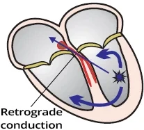
- Nhịp nhanh thất (VT) là nhịp thất có tần số > 100/min.
- Xung được tạo ra trong thất, phía dưới bó His
- Đây là nhịp nhanh QRS rộng (wide-complex tachycardia) (QRS rộng > 0.12s)
- Nguyên nhân thường gặp nhất là
- Vòng vào lại (re-entry) trong sẹo xơ hoá sau nhồi máu cơ tim
- Phát ra xung với tần số > 100/min.
- 50% các trường hợp VT còn bảo tồn dẫn truyền ngược dòng
- Xung từ thất lan ngược dòng qua nút nhĩ – thất lên nhĩ
- Vì lúc đó nút nhĩ – thất không ở trong thời kỳ trơ
- Nút xoang bị tái lập (reset) và không phát xung
(ức chế vượt tần số – overdrive suppression)
- Xung từ thất lan ngược dòng qua nút nhĩ – thất lên nhĩ
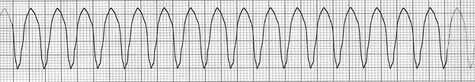
Nhịp nhanh thất
- Tần số: 180/min.
- Phức bộ QRS giãn rộng (> 0.12s)
- Không thấy sóng P
- Nhĩ được hoạt hoá ngược dòng và sóng P bị ẩn trong các phức bộ QRS giãn rộng
- Đây là nhịp nhanh thất đơn dạng
- Tất cả các phức bộ QRS đều giống nhau
Cơ chế hình thành nhịp nhanh thất
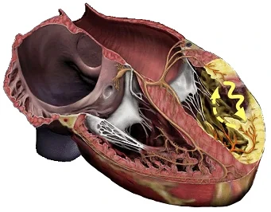
- Một ổ ngoại vị hoạt hoá trong thất
- Bắt đầu phát xung với tần số > 100/min.
- Ổ này chiếm lấy vai trò chủ nhịp (ức chế vượt tần số)
- Ổ ngoại vị có thể phát xung theo 3 cơ chế:
- Vòng vào lại (re-entry)
- Tăng tính tự động
- Hoạt động khởi kích (triggered activity)
- Cơ chế thường gặp nhất là vòng vào lại
- Xảy ra trong sẹo xơ hoá sau nhồi máu cơ tim
Nguyên nhân của nhịp nhanh thất
- 90% VT xảy ra trên tim có tổn thương cấu trúc (vòng vào lại dễ hình thành trong cơ tim bị tổn thương):
- Sẹo xơ hoá (fibrosis) ở thất sau nhồi máu cơ tim hoặc sau phẫu thuật
- Giãn hoặc dày thất trong bệnh cơ tim
- Các ổ thiếu máu ở thất trong bệnh tim thiếu máu cục bộ
- Tim bẩm sinh - tứ chứng Fallot, các tật van tim
- Bệnh kênh ion (channelopathies) (rối loạn kênh ion ở tim làm biến đổi điện thế hoạt động):
- Hội chứng QT kéo dài
- Hội chứng QT ngắn
- Điều trị bằng thuốc chống loạn nhịp
- Rối loạn cân bằng ion (hạ kali máu, hạ calci máu, hạ magnesi máu)
- Các bệnh tim do viêm
- Amyloidosis, sarcoidosis, viêm khớp dạng thấp...
- Nhịp nhanh thất vô căn
- Là nhịp nhanh thất không rõ nguyên nhân - rất hiếm gặp
Thời gian kéo dài của nhịp nhanh thất
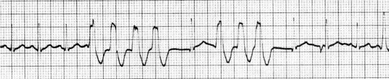
- Nhịp nhanh thất được phân loại theo thời gian kéo dài thành:
- Nhịp nhanh thất không bền bỉ (Non-sustained VT)
- Nhịp nhanh thất bền bỉ (Sustained VT)
Nhịp nhanh thất không bền bỉ
- Gồm ít nhất 3 phức bộ QRS thất liên tiếp
- Nếu ít phức bộ QRS hơn thì đó là ngoại tâm thu thất
- Tự kết thúc trong vòng 30 giây
- Nhịp nhanh thất không bền bỉ "không kéo dài" và tự chấm dứt trong vòng 30s
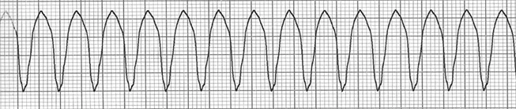
Nhịp nhanh thất bền bỉ
- Kéo dài hơn 30 giây
- Kết thúc tự phát, hoặc có thể được chấm dứt bằng điều trị như sốc điện chuyển nhịp
Huyết động trong nhịp nhanh thất
- Nhịp nhanh thất huyết động ổn định
- Điển hình là VT có tần số tim < 160/min.
- Dù có VT, tim vẫn hoạt động như một cái bơm
- Bệnh nhân có triệu chứng chủ quan và khách quan tối thiểu
- Rất hiếm khi bệnh nhân không có triệu chứng dù đang có VT
- Không có định nghĩa chính xác về mức huyết áp, mạch và tần số thở của bệnh nhân...
- Bệnh nhân có VT có thể không triệu chứng trong nhiều giờ (hoặc thậm chí nhiều ngày - rất hiếm)
- Nhịp nhanh thất huyết động không ổn định
- Điển hình là VT có tần số tim > 160/min.
- Nói chung, VT phần lớn là huyết động không ổn định
- Tim suy về huyết động, không hoạt động như một cái bơm
- Bệnh nhân có triệu chứng chủ quan và khách quan nặng
- Tụt huyết áp, sốc, phù phổi, đau ngực, đánh trống ngực, khó thở, và cả ngất
- Bệnh nhân trông rất nặng ngay từ cái nhìn đầu tiên
- Không có định nghĩa chính xác về mức huyết áp, mạch và tần số thở của bệnh nhân...
- Đây là tình trạng đe doạ tính mạng, cần điều trị cấp cứu (ví dụ sốc điện chuyển nhịp)
Hình thái của nhịp nhanh thất
- Mọi nhịp nhanh thất (VT) đều có
- Tần số > 100/min.
- Phức bộ QRS giãn rộng (> 0.12s)
- Rất hiếm khi phức bộ QRS có thể hẹp (nhịp nhanh thất từ vách liên thất, nhịp nhanh thất phân nhánh)
- Ổ ngoại vị thất đang hoạt động (một hoặc nhiều ổ)
- Không có phân loại VT thống nhất vì có nhiều tiêu chí:
- Tổn thương cấu trúc tim, số lượng và vị trí ổ ngoại vị, cơ chế VT, đáp ứng của VT với điều trị, độ ổn định huyết động, hình dạng đường ghi ECG...
- Hình dạng đường ghi ECG của VT phụ thuộc chủ yếu vào:
- Vị trí của ổ ngoại vị
- Ở vách, ở mỏm, ở nền, ở đường ra, ở thất trái, ở thất phải
- Cơ chế của VT
- Vòng vào lại, tăng tính tự động, hoạt động khởi kích
- Vị trí của ổ ngoại vị
- Dựa trên hình thái đường ghi ECG, nhịp nhanh thất được phân loại thành:
- Nhịp nhanh thất đơn dạng (dạng VT thường gặp nhất)
- Nhịp nhanh thất đa dạng
- Torsades de Pointes
- Nhịp nhanh thất đường ra thất phải (RVOT)
- Nhịp nhanh thất đường ra thất trái (LVOT)
- Nhịp nhanh thất phân nhánh (fascicular VT)
- Nhịp nhanh thất vào lại nhánh bó (bundle branch reentrant VT – BBRT)
- Nhịp nhanh thất hai chiều
- Flutter thất (ventricular flutter)
- Rung thất (ventricular fibrillation – VF)
Nhịp nhanh QRS rộng (wide-complex tachycardia)
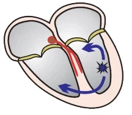
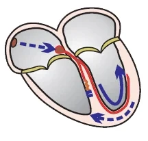
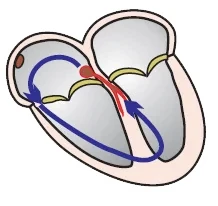
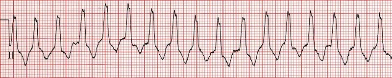
- Nhịp nhanh QRS rộng được định nghĩa là:
- Nhịp nhanh (tần số > 100/min.)
- Với phức bộ QRS giãn rộng (≥ 0.12s)
Nhịp nhanh QRS rộng
- Nhịp nhanh QRS rộng có thể có 3 nguyên nhân chính:
- Nhịp nhanh thất (chiếm 80% các nhịp nhanh QRS rộng)
- Thất được khử cực từ một ổ ngoại vị thất
- Nằm ở đâu đó dưới chỗ phân đôi của các nhánh bó His
- Thất được khử cực từ một ổ ngoại vị thất
- Nhịp nhanh trên thất có dẫn truyền lệch hướng
- Thất chỉ được khử cực qua một nhánh bó
- Bệnh nhân có block nhánh sẵn có hoặc block nhánh cơ năng
- Thất chỉ được khử cực qua một nhánh bó
- Nhịp nhanh trên thất có đường dẫn truyền phụ (AVRT ngược chiều – antidromic AVRT)
- Trong hội chứng WPW, thất và nhĩ được nối với nhau qua 2 đường (bộ nối nhĩ – thất và đường dẫn truyền phụ)
- Nếu xung bắt đầu đi vòng giữa nhĩ và thất (vòng vào lại), sẽ tạo ra AVRT ngược chiều
- Thất được khử cực qua đường dẫn truyền phụ rồi qua cơ tim, không qua hệ thống dẫn truyền
- Nguyên nhân hiếm gặp của nhịp nhanh QRS rộng:
- Rối loạn điện giải nặng (tăng kali máu)
- Ngộ độc thuốc chẹn kênh natri
- Nhịp nhanh do máy tạo nhịp
ECG và nhịp nhanh thất
- Tần số > 100/min.
- Phức bộ QRS giãn rộng (≥ 0.12s, thường gặp nhất là > 0.16s)
- Rất hiếm khi phức bộ QRS hẹp (nhịp nhanh thất từ vách liên thất, nhịp nhanh thất phân nhánh)
- Không có hình ảnh ECG điển hình của block nhánh ở chuyển đạo V1, V6 (LBBB, RBBB)
- Dạng RSr ở V1 (tai thỏ trái lớn hơn)
- Trục lệch phải cực độ "north-west"
- QRS dương ở aVR
- QRS âm ở I, aVF
- Phân ly nhĩ – thất (AV dissociation)
- Nhịp bắt được (capture beat)
- Nhịp hỗn hợp (fusion beat)
- Đồng dạng các chuyển đạo trước tim (precordial concordance) (dương hoặc âm)
- Dấu hiệu Brugada
- Dấu hiệu Josephson
- Thời gian sóng R ở chuyển đạo II ≥ 50ms
- Mỗi dấu hiệu ECG đều có thể suy ra bằng lập luận
- VT không luôn biểu hiện đủ tất cả các dấu hiệu ECG
- Mỗi dấu hiệu có độ nhạy và độ đặc hiệu nhất định trong chẩn đoán VT
- Các thuật toán chẩn đoán được dùng để chẩn đoán VT
QRS giãn rộng > 0.12s (thường gặp nhất là > 0.16s)
- Trong nhịp xoang, xung lan xuống thất nhanh qua hệ thống dẫn truyền và hoạt hoá thất trong vòng 0.12s
- Do đó phức bộ QRS hẹp <0.12s
- Trong VT, thất được hoạt hoá từ một ổ ngoại vị trong thất
- Xung hoạt hoá thất qua cơ tim (không qua các nhánh bó)
- Xung lan chậm hơn qua cơ tim, nên phức bộ QRS giãn rộng > 0.12s (thường gặp nhất là > 0.16s)
- Ổ ngoại vị càng gần vách liên thất thì phức bộ QRS càng hẹp
- Ổ ngoại vị càng ra phía bên thì phức bộ QRS càng rộng
- Nói chung, phức bộ QRS rộng hơn là do dẫn truyền chậm trễ qua thất:
- Tổ chức sẹo xơ hoá sau nhồi máu cơ tim
- Dày thất phải hoặc thất trái
- Bệnh cơ tim
- Nhịp nhanh thất với phức bộ QRS hẹp (ngoại lệ, VT có thể có phức bộ QRS không giãn rộng ≤0.12s)
- Nhịp nhanh thất từ vách liên thất
- Nhịp nhanh thất phân nhánh
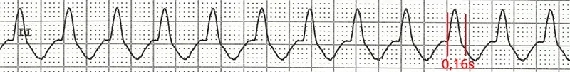
Nhịp nhanh thất đơn dạng
- QRS giãn rộng (0.16s)
- Nhịp nhanh thất đơn dạng
- Mỗi phức bộ QRS đều giống nhau
- Tần số 150/min.
Không có hình ảnh ECG điển hình của block nhánh (bó Tawara) (V1, V6)
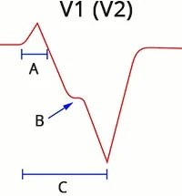
A: sóng r > 0.03s
B: dấu hiệu Josephson
C: dấu hiệu Brugada
- Trong trường hợp block nhánh (trái hoặc phải):
- Thất được hoạt hoá trước qua nhánh bó không bị block
- Sau đó thất bên kia được hoạt hoá chậm trễ qua cơ tim, làm phức bộ QRS giãn rộng (>0.12s)
- Nếu ổ VT nằm ở phía bên của thất, cả hai thất đều được hoạt hoá qua cơ tim từ ổ đó
- QRS sẽ giống block nhánh nhưng không đáp ứng tiêu chuẩn ECG của block nhánh
- Nhịp nhanh thất dạng block nhánh phải (Right Bundle Branch Block)
- Ở V1, phức bộ QRS hai pha (R, qR, QR, RS)
- Nếu V1 có QRS ba pha (Rsr) thì tai thỏ trái lớn hơn
- Ở V6, tỉ lệ R/S < 1
- Trục lệch phải cực độ (180° đến -90°)
- QRS âm ở I, aVF
- Nhịp nhanh thất dạng block nhánh trái (Left Bundle Branch Block)
- Ở V1, sóng r ban đầu rộng hơn 0.03s
- Ở V1, có khấc trên nhánh xuống của sóng S (Slurring hoặc notching of S wave)
- Dấu hiệu Josephson
- Ở V1, khoảng RS > 0.1s
- Dấu hiệu Brugada
- Ở V6, có sóng q (Q)
- Trục lệch phải (90° đến 180°)
- QRS âm ở I
- QRS dương ở aVF
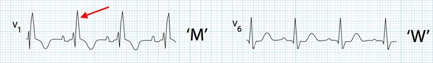
Block nhánh phải (RBBB)
- QRS giãn rộng > 0.12s
- Dạng "M" rsR' (V1) - tai thỏ phải lớn hơn
- Dạng "W" (V6) - sóng S sâu
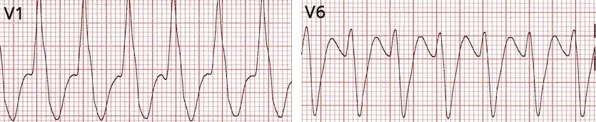
Nhịp nhanh thất dạng RBBB
- Tần số tim: 150/min
- QRS giãn rộng > 0.12s
- Ở V1 có sóng R rộng và cao
- Không có dạng RBBB điển hình (trong RBBB, tai thỏ phải lớn hơn - rsR')
- Chuyển đạo V1 và V6 không giống RBBB
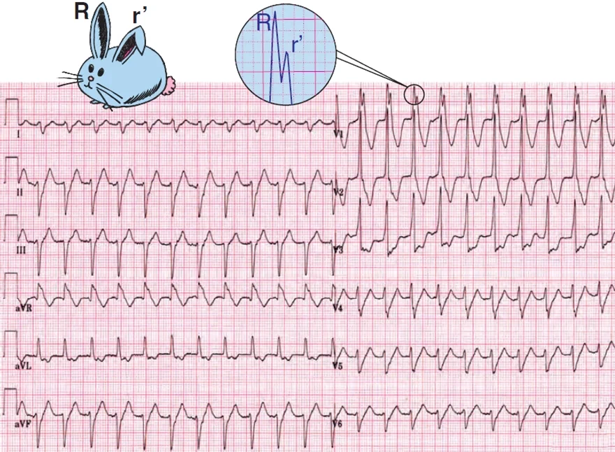
Nhịp nhanh thất dạng RBBB
- Tần số tim: 135/min.
- QRS giãn rộng > 0.12s
- Trục lệch phải cực độ (180° đến -90°)
- QRS âm (I, aVF)
- Ở V1 RsR (tai thỏ trái lớn hơn)
- Tai thỏ trái đặc trưng cho nhịp nhanh thất
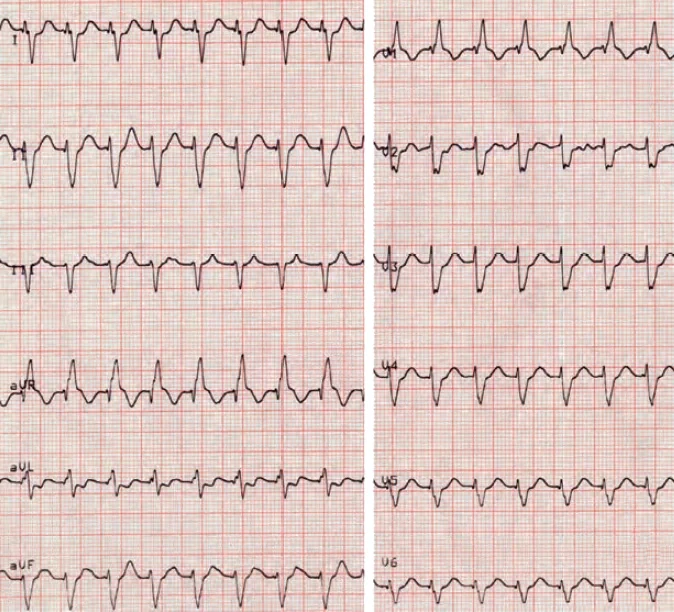
Nhịp nhanh thất dạng RBBB
- Tần số tim 143/min
- QRS giãn rộng > 0.12s
- QRS giãn rộng ranh giới, khoảng 0.13s
- Ở V1 rsR (tai thỏ phải lớn hơn)
- Đây là dạng RBBB (nhưng thực chất là nhịp nhanh thất)
- Trục lệch phải cực độ (180° đến -90°)
- QRS âm (I, aVF)
- Đây là nhịp nhanh thất phân nhánh hiếm gặp, với ổ ngoại vị ở phân nhánh trái sau
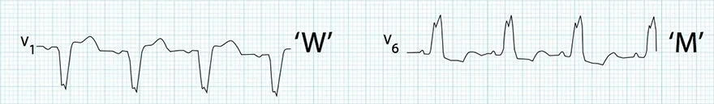
Block nhánh trái (LBBB)
- QRS giãn rộng > 0.12s
- Dạng "W" (V1) - sóng S sâu
- Dạng "M" (V6) - sóng R trội
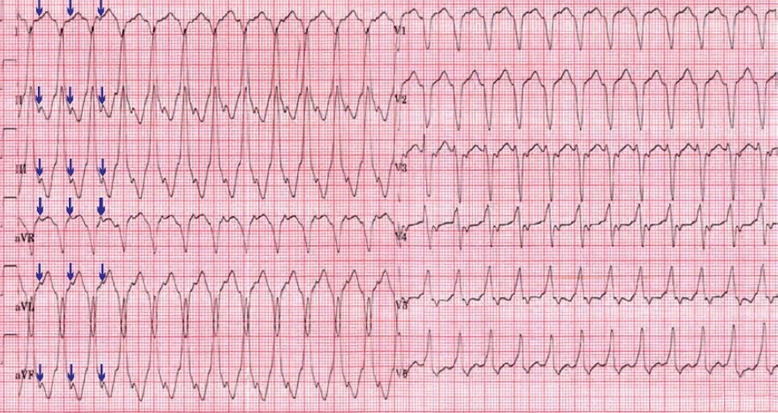
Nhịp nhanh thất hình thái LBBB
- Tần số tim 150/min
- QRS giãn rộng > 0.12s
- Dấu hiệu Brugada (V1)
- Khoảng RS ở V1 > 100ms (từ đầu phức bộ QRS đến đỉnh sóng S là > 100ms)
- Trục lệch phải (90° đến 180°)
- QRS âm (I)
- QRS dương (aVF)
- Dẫn truyền thất – nhĩ
- Dẫn truyền ngược dòng còn bảo tồn (mũi tên chỉ các sóng P ngược dòng)
- Sóng P sinh lý không bao giờ âm ở các chuyển đạo thành dưới (II, III, aVF)
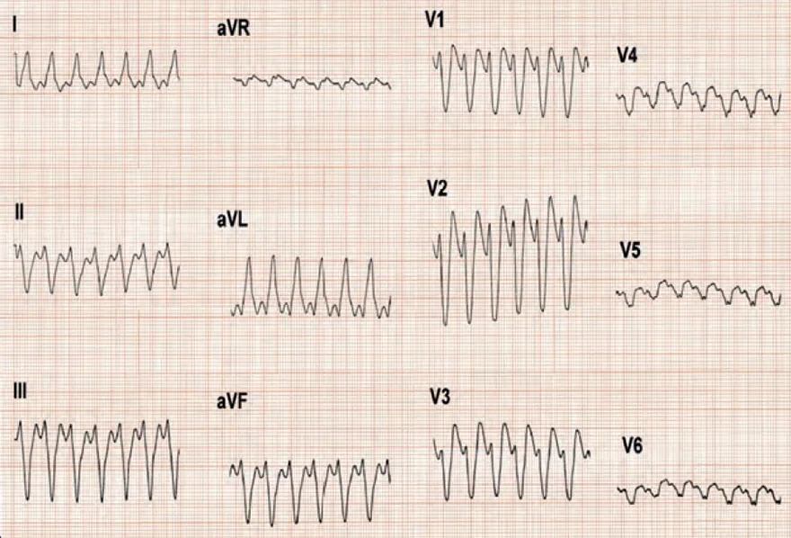
Nhịp nhanh thất hình thái LBBB
- Tần số tim: 143/min
- QRS giãn rộng > 0.18s
- Ở V1 sóng r > 0.03s (0.05s)
- Trục lệch trái cực độ (-30° đến -90°)
- QRS âm (II, III)
- QRS dương (aVL)
Tai thỏ trái (left rabbit ear) (V1)
- Trong block nhánh phải, ở V1 xuất hiện dạng rsR
- Tai thỏ phải lớn hơn
- Nếu nhịp nhanh thất tạo ra Rsr dương ở V1 (ổ ngoại vị ở thất trái)
- Thì tai thỏ trái lớn hơn
- VT có hướng vector điện tim khác so với block nhánh phải
- Điều này không áp dụng cho nhịp nhanh thất phân nhánh
- Thì tai thỏ trái lớn hơn
Block nhánh phải
- QRS giãn rộng > 0.12s
- Dạng "M" rsR (V1) - tai thỏ phải lớn hơn
- Dạng "W" (V6) - sóng S sâu
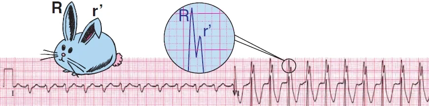
Nhịp nhanh thất dạng block nhánh phải (RBBB)
- QRS giãn rộng > 0.12s
- Dạng "M" Rsr (V1)
- Tai thỏ trái lớn hơn
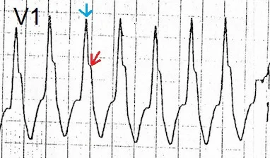
Nhịp nhanh thất dạng block nhánh phải (RBBB)
- QRS một pha giãn rộng (V1) > 0.12s
- Tai thỏ trái lớn hơn (mũi tên xanh - không phải "tai thỏ" điển hình)
Trục lệch phải cực độ "north-west"
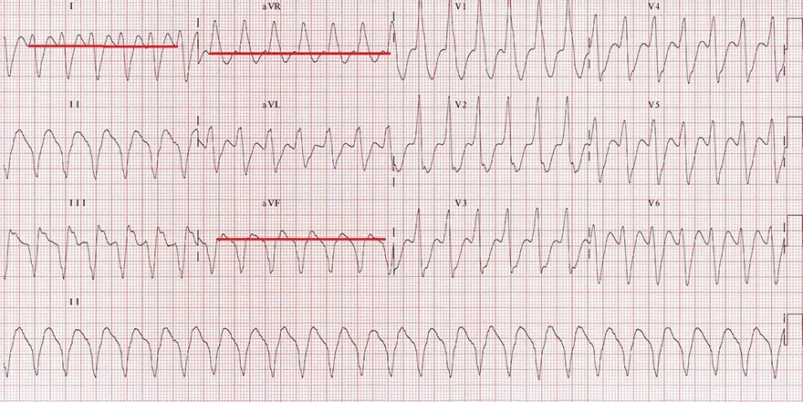
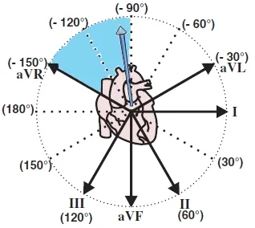
- Nếu VT có ổ ngoại vị ở mỏm tim hoặc nền tim
- Thì vector điện tim chính tạo ra trục lệch phải cực độ
- QRS âm (I, aVF)
- QRS dương (aVR)
Nhịp nhanh thất
- Tần số: 150/min
- QRS giãn rộng > 0.12s
- Sóng R rộng và cao ở V1
- Không có dạng điển hình của block nhánh phải
- Trục lệch phải cực độ "north-west"
- QRS âm (I, aVF)
- QRS dương (aVR)
Phân ly nhĩ – thất và dẫn truyền thất – nhĩ
- 50% các trường hợp VT còn bảo tồn dẫn truyền ngược dòng (đây là dẫn truyền thất – nhĩ)
- Xung thất hoạt hoá thất rồi lan ngược dòng qua nút nhĩ – thất lên nhĩ
- Chúng tái lập nút xoang, khiến nút xoang không phát xung (ức chế vượt tần số)
- Xung đi qua được bộ nối nhĩ – thất vì bộ nối không ở trong thời kỳ trơ
- Nhĩ được hoạt hoá ngược dòng (từ dưới lên trên)
- Dẫn truyền thất – nhĩ (ventriculoatrial association) nghĩa là có sự "liên hệ" giữa thất và nhĩ
- Xung hoạt hoá thất trước rồi hoạt hoá nhĩ theo chiều ngược dòng
- Dẫn truyền ngược dòng dần mất đi khi tần số VT tăng lên
- Xung thất hoạt hoá thất rồi lan ngược dòng qua nút nhĩ – thất lên nhĩ
- 50% các trường hợp VT có phân ly nhĩ – thất
- Xung phát sinh ở thất và đồng thời ở nút xoang
- Xung từ thất có tần số cao hơn (> 100/min.)
- Xung từ nút xoang tạo ra sóng P, nhưng sau đó bị block ở bộ nối nhĩ – thất
- Vì ở bộ nối nhĩ – thất hai xung gặp nhau trong thời kỳ trơ (một từ thất và một từ nút xoang)
- Phân ly nhĩ – thất thấy trên ECG là sự độc lập của sóng P với phức bộ QRS
- Lưu ý phân ly nhĩ – thất không phải block nhĩ – thất độ III, nhưng block nhĩ – thất độ III sẽ biểu hiện phân ly nhĩ – thất trên ECG
- Trong VT thường không thấy sóng P vì chúng lẫn trong các phức bộ QRS giãn rộng
- Do đó không nhìn thấy được phân ly nhĩ – thất
- Để thấy rõ phân ly nhĩ – thất trong nhịp nhanh thất, có thể dùng chuyển đạo Lewis
- Xung phát sinh ở thất và đồng thời ở nút xoang
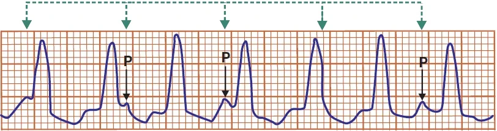
Nhịp nhanh thất
- Phân ly nhĩ – thất
- Phức bộ QRS và sóng P độc lập với nhau
- Sóng P có tần số 100/min. (một số sóng P bị ẩn trong phức bộ QRS)
- Phức bộ QRS có tần số 150/min.
- Nếu sóng P dẫn được xuống thất thì sẽ xuất hiện phức bộ QRS hẹp
- Nhát co bóp hỗn hợp
- Nhịp bắt được
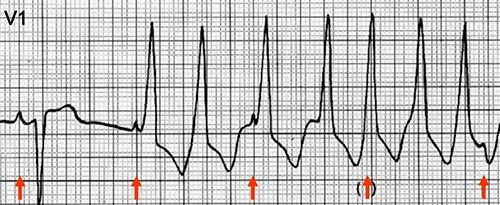
Nhịp nhanh thất
- Phức bộ QRS đầu tiên là một nhịp xoang
- Sau đó là nhịp nhanh thất (phức bộ QRS giãn rộng >0.12s)
- Nút xoang vẫn phát xung (sóng P) với tần số 60/min.
- Ổ ngoại vị thất phát xung (QRS) với tần số 150/min.
- Xung từ thất không dẫn lên nhĩ, và xung từ nhĩ không dẫn xuống thất
- Do thời kỳ trơ của nút nhĩ – thất
- Trên ECG thấy phân ly nhĩ – thất (sóng P độc lập với phức bộ QRS)
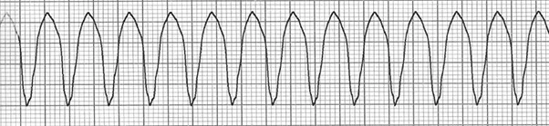
Nhịp nhanh thất
- Tất cả phức bộ QRS đều giống nhau, không phức bộ nào bị sóng P làm biến dạng
- Đây là dẫn truyền thất – nhĩ (ventriculoatrial association)
- Dẫn truyền ngược dòng còn bảo tồn
- Xung từ thất dẫn lên nhĩ và tái lập nút xoang, khiến nút xoang không phát xung (sóng P)
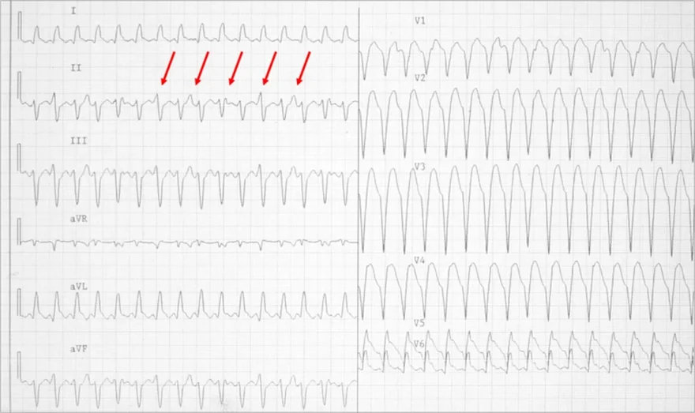
Nhịp nhanh thất
- Phức bộ QRS giãn rộng 0.18s
- Tần số: 130/min.
- Phân ly nhĩ – thất
- Sóng P độc lập với phức bộ QRS
- Sóng P làm biến dạng phức bộ QRS và sóng T
Nhịp bắt được (capture beat)
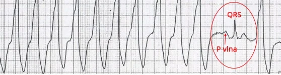
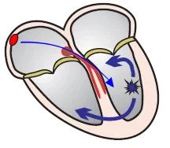
- Trong quá trình nhịp nhanh thất (khi có phân ly nhĩ – thất hoặc dẫn truyền thất – nhĩ)
- Nút xoang hiếm khi phát được một xung đúng thời điểm
- Xung này được nút nhĩ – thất dẫn xuống thất và tái lập ổ ngoại vị trong thất (ức chế vượt tần số)
- Thất do đó được hoạt hoá bởi một xung trên thất trong quá trình nhịp nhanh thất
- Trên ECG thấy một nhịp xoang hẹp trong lúc nhịp nhanh thất
- Nhịp này giống hệt nhịp thấy trên ECG khi nhịp xoang
- Đây là nhịp bắt được vì xung từ nút xoang "bắt được" hệ thống dẫn truyền và thất
- Trong pha có thể bị kích thích (ngoài thời kỳ trơ) của nhịp nhanh thất
Nhịp nhanh thất
- Nhịp bắt được
- Trong nhịp nhanh thất thấy một sóng P và một phức bộ QRS xoang hẹp
- Trong VT, xung từ nút xoang (sóng P) dẫn được xuống thất và hoạt hoá thất (QRS)
- Xung từ nút xoang xuất hiện vào lúc cơ tim không ở trong thời kỳ trơ
Nhịp hỗn hợp (fusion beat)
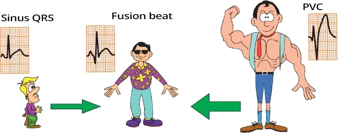
- Trong VT, một xung phát sinh ở nút xoang và dẫn xuống thất vào lúc
- Mà hai xung gặp nhau trong thất (xung từ nhĩ + xung từ thất)
- Xuất hiện một nhịp hỗn hợp
- Kết quả là một phức bộ QRS biến dạng, phức bộ này
- Nhỏ hơn phức bộ QRS của ổ ngoại vị thất
- Lớn hơn phức bộ QRS xoang (nhịp bắt được)
Nhịp bắt được, nhịp hỗn hợp, nhịp thất
- Nhịp xoang (nhịp bắt được)
- Thất được hoạt hoá bởi xung từ nút xoang qua hệ thống dẫn truyền, tạo ra phức bộ QRS hẹp
- Nếu một nhịp xoang xuất hiện trong lúc VT thì gọi là nhịp bắt được
- Nhịp thất
- Thất được hoạt hoá bởi xung từ ổ ngoại vị thất qua cơ tim, không qua hệ thống dẫn truyền, tạo ra phức bộ QRS giãn rộng
- Về bản chất đó là ngoại tâm thu thất (premature ventricular complex – PVC); 3 PVC liên tiếp được coi là VT
- Nhịp hỗn hợp
- Cơ tim thất được hoạt hoá bởi 2 xung
- Một xung từ nhĩ (nút xoang)
- Xung kia từ ổ ngoại vị thất
- Ổ ngoại vị và nút xoang phát xung đồng thời, và không tái lập nhau ở bộ nối nhĩ – thất
- Tạo ra một QRS biến dạng (khác cả QRS xoang và QRS thất)
- Cơ tim thất được hoạt hoá bởi 2 xung
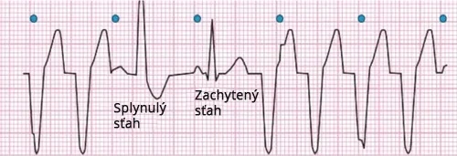
Nhịp nhanh thất
- Phân ly nhĩ – thất
- Phức bộ QRS và sóng P độc lập với nhau
- Nhịp hỗn hợp
- Một xung từ nút xoang (sóng P) xuất hiện vào lúc nó dẫn được xuống thất
- Tuy nhiên, trong thất 2 xung đã gặp nhau:
- Một xung từ nút xoang
- Xung kia từ ổ ngoại vị thất
- Thất được hoạt hoá bởi 2 xung
- Nhịp bắt được
- Một xung từ nút xoang (sóng P) xuất hiện vào lúc nó dẫn được xuống thất và tái lập ổ ngoại vị thất
- Do đó thất chỉ được hoạt hoá bởi xung từ nút xoang
- Sau đó nhịp nhanh thất tiếp tục
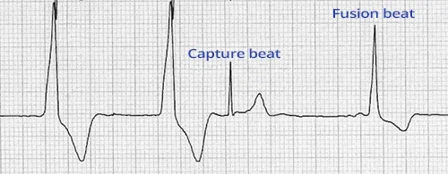
Nhịp bắt được và nhịp hỗn hợp
- Ngoại tâm thu thất (chuỗi đôi) (phức bộ QRS giãn rộng thứ 1 và thứ 2)
- Nhịp bắt được
- Nút xoang phát xung vượt lên và làm ngừng hoạt động ổ ngoại vị thất
- Nhịp hỗn hợp
- Hai xung gặp nhau trong thất:
- Một xung từ nút xoang
- Xung kia từ ổ ngoại vị thất
- Hai xung gặp nhau trong thất:
Đồng dạng các chuyển đạo trước tim (precordial concordance) (dương hoặc âm)
- Concordance nghĩa là "sự đồng thuận", "sự nhất trí"
- Trong ngữ cảnh ECG, từ này thường dùng cho sóng T: sóng T đồng dạng (concordant T waves)
- Đồng dạng âm hoặc dương ở các chuyển đạo trước tim nghĩa là
- Tất cả phức bộ QRS ở các chuyển đạo trước tim (V1-V6) đều dương hoặc đều âm
- Đồng dạng âm - toàn bộ QRS ở các chuyển đạo trước tim (V1-V6) đều âm
- Ổ ngoại vị của VT nằm ở vùng mỏm tim
- Vector thất chính hướng ra xa các chuyển đạo trước tim
- Đồng dạng âm có độ đặc hiệu rất cao cho VT
- Ổ ngoại vị của VT nằm ở vùng mỏm tim
- Đồng dạng dương - toàn bộ QRS ở các chuyển đạo trước tim (V1-V6) đều dương
- Ổ ngoại vị nằm ở thành sau hoặc nền tim
- Vector thất chính hướng về phía các chuyển đạo trước tim
- Đồng dạng dương cũng có thể gặp trong AVRT ngược chiều với đường dẫn truyền phụ ở phía sau
- Do đó đồng dạng dương không đặc hiệu cho VT bằng đồng dạng âm
- Ổ ngoại vị nằm ở thành sau hoặc nền tim
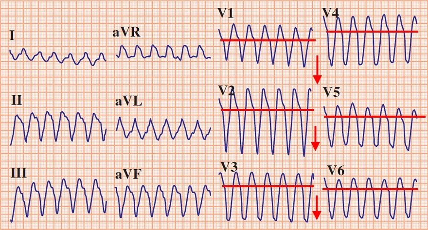
Nhịp nhanh thất
- Tần số: 160/min.
- Phức bộ QRS giãn rộng 0.2s
- Nếu QRS rộng > 0.16s thì gần như luôn là VT
- Đồng dạng âm ở các chuyển đạo trước tim
- Tất cả phức bộ QRS (V1-V6) đều âm
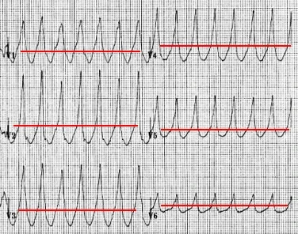
Nhịp nhanh thất
- Tần số: 160/min.
- Phức bộ QRS giãn rộng 0.2s
- Nếu QRS rộng hơn 0.16s thì gần như luôn là VT
- Đồng dạng dương ở các chuyển đạo trước tim
- Đồng dạng dương không đặc hiệu cho VT bằng đồng dạng âm
- Có thể là AVRT ngược chiều (khi nhịp xoang, ECG sẽ có sóng delta)
- Thăm dò điện sinh lý được dùng để chẩn đoán chính xác
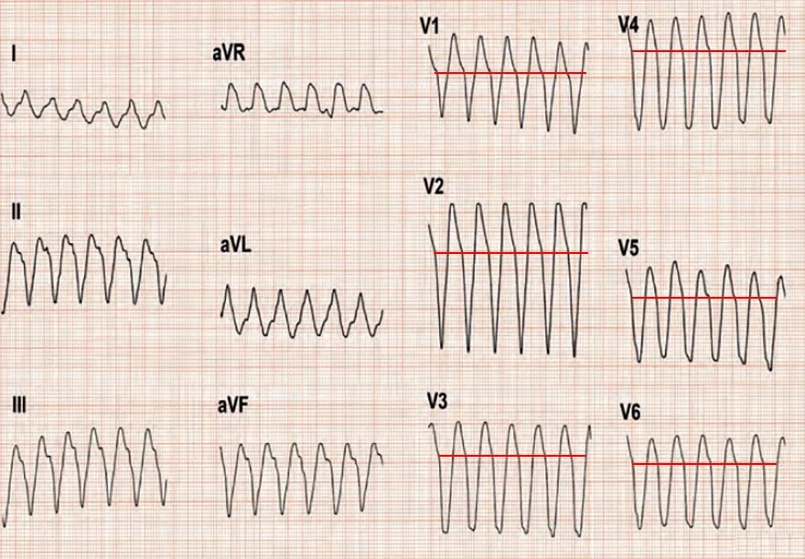
Nhịp nhanh thất
- Tần số: 160/min.
- Phức bộ QRS giãn rộng 0.2s
- Nếu QRS rộng hơn 0.16s thì gần như luôn là VT
- Đồng dạng âm ở các chuyển đạo trước tim
- Tất cả phức bộ QRS (V1-V6) đều âm
Dấu hiệu Brugada
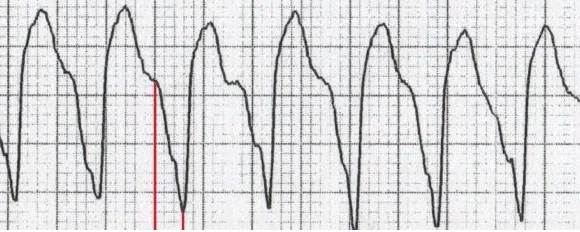
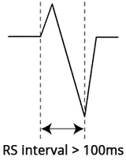
- Trong VT, thất được hoạt hoá từ một ổ ngoại vị
- Khoảng từ đầu QRS đến đỉnh sóng S (khoảng RS)
- Là thời gian trong đó thất được khử cực hoàn toàn (từ vách đến nền tim)
- Trong VT, khoảng RS > 100ms (hơn 2.5 ô nhỏ) ở bất kỳ chuyển đạo nào
- Vì hoạt hoá thất qua cơ tim lâu hơn so với qua hệ thống dẫn truyền
Nhịp nhanh thất
- Dấu hiệu Brugada
- Khoảng RS > 100ms (3 ô nhỏ = 120ms)
Dấu hiệu Josephson
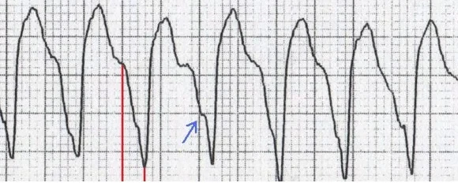
- Trong VT, thất gần như luôn biến đổi về cấu trúc (do nhồi máu, bệnh cơ tim...)
- Khi xung lan qua vùng cơ tim bị tổn thương, vector có thể đổi hướng một phần
- Biểu hiện là khấc trên nhánh xuống của sóng S (Notching near the nadir of the S-wave)
- Dấu hiệu Josephson được đánh giá ở bất kỳ chuyển đạo nào
Dấu hiệu Josephson và dấu hiệu Brugada
- Dấu hiệu Brugada
- Khoảng RS > 100ms
- Dấu hiệu Josephson
- Khấc trên nhánh xuống của sóng S (mũi tên xanh)
Thời gian tới đỉnh sóng R (R wave peak time – RWPT) ở II ≥ 50ms
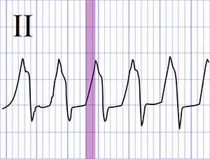
- Thời gian tới đỉnh sóng R (RWPT) ≥ 0.05s
- Trong VT có khử cực thất kéo dài
- Nguyên lý của thời gian tới đỉnh sóng R giống như dấu hiệu Brugada
- Thời gian tới đỉnh sóng R (II) ≥ 50ms
- Chỉ đánh giá ở chuyển đạo II
- Nếu chuyển đạo II có sóng Q thì đánh giá thời gian tới đỉnh sóng Q
- Dùng để chẩn đoán nhanh nhịp nhanh QRS rộng
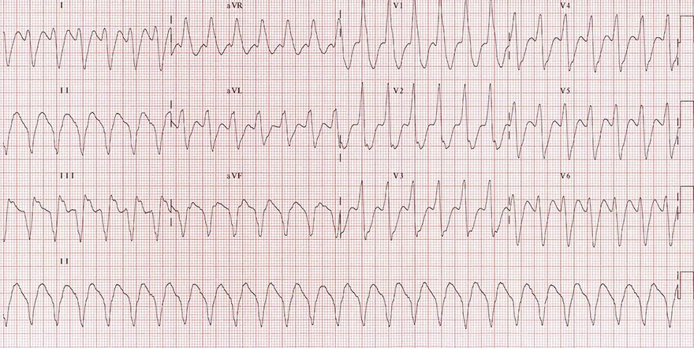
Nhịp nhanh thất
- Phức bộ QRS giãn rộng 0.2s
- Trục lệch phải cực độ (180° đến -90°)
- QRS âm (I, aVF)
- Dấu hiệu Brugada
- Khoảng RS > 100ms
- Dấu hiệu Josephson
- Khấc trên nhánh xuống của sóng S (II, III, aVF)
- Thời gian tới đỉnh sóng R (Q) ở chuyển đạo II > 50ms
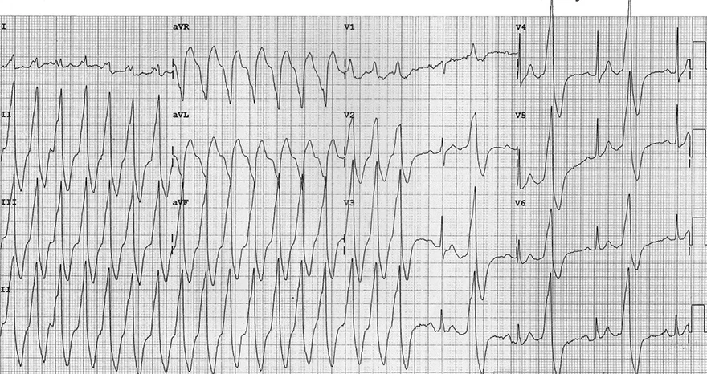
Nhịp nhanh thất
- Phức bộ QRS giãn rộng 0.2s
- Đồng dạng dương ở các chuyển đạo trước tim (V1-V6)
- Dấu hiệu Brugada
- Khoảng RS > 100ms (aVR, aVL)
- Ở nửa sau của ECG có nhịp đôi thất
- Xen kẽ nhịp bắt được và ngoại tâm thu thất
- Thời gian tới đỉnh sóng R (Q) ở chuyển đạo II > 50ms
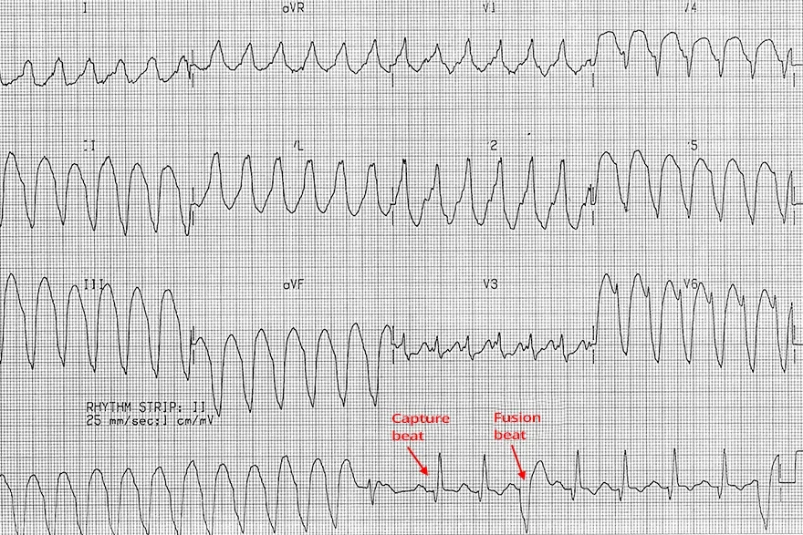
Nhịp nhanh thất
- Phức bộ QRS giãn rộng: 0.2s
- Ở nửa sau của chuyển đạo liên tục (rhythm strip) có nhịp bắt được và nhịp hỗn hợp
- Chuyển đạo liên tục được ghi sau ECG 12 chuyển đạo
- Do đó các nhịp này không hiện ở các chuyển đạo chi và các chuyển đạo trước tim
- Dấu hiệu Brugada
- Khoảng RS > 100ms (V6)
- Thời gian tới đỉnh sóng R (Q) ở chuyển đạo II > 50ms
1.1. Nhịp nhanh thất: ổ khởi phát và định khu
Nhịp nhanh thất
- Nhịp nhanh thất (ventricular tachycardia – VT) có một ổ ngoại vị thất (ectopic focus)
- Nằm dưới bó His
- Tạo ra các dấu hiệu ECG đặc trưng
- Ổ ngoại vị phát xung với tần số > 100/min.
- Cơ chế phát xung có thể là:
- Vòng vào lại (re-entry) (thường gặp nhất)
- Tăng tính tự động
- Hoạt động khởi kích (triggered activity)
- Cơ chế phát xung có thể là:
- Tạo ra các phức bộ QRS giãn rộng (>0.12s)
- Hiếm khi các phức bộ QRS hẹp (nhịp nhanh thất từ vùng vách liên thất, nhịp nhanh thất phân nhánh)
- Ổ ngoại vị thất tạo ra một vector điện thất
- Vector này sau đó khử cực hai thất và tạo ra các phức bộ QRS
- Dựa vào hình dạng sóng trên ECG, có thể định khu ổ ngoại vị trong thất
Định khu ổ ngoại vị của nhịp nhanh thất
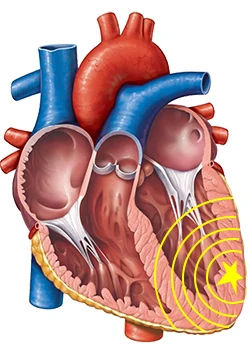
- Ổ ngoại vị trong nhịp nhanh thất có thể được định khu về các vùng chính của tim:
- Thất phải, thất trái, vách liên thất, mỏm tim, nền tim, thành dưới của tim
Dấu hiệu ECG: | Định khu: |
Hình dạng QRS: | |
Dạng block nhánh trái (LBBB) | Vách liên thất phía thất trái, thất phải, nhịp nhanh thất vào lại nhánh bó (bundle branch reentrant VT – BBRT) |
Dạng block nhánh phải (RBBB) | Thất trái ngoài vách liên thất |
Trục điện tim: | |
Hướng lên trên (superior) | Thành dưới |
Hướng xuống dưới (inferior) | Phần trên vách liên thất, phần trên thành bên |
Hướng sang phải (rightward) | Thành bên trái, mỏm tim |
Vùng chuyển tiếp: | |
Vùng chuyển tiếp ≤ V3 | Nền tim |
Vùng chuyển tiếp ≥ V4 | Mỏm tim |
Đồng dạng các chuyển đạo trước tim (precordial concordance): | |
Dương | Nền tim |
Âm | Mỏm tim |
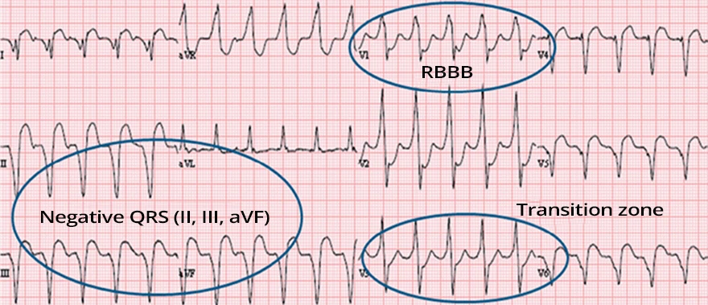
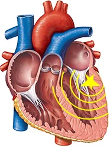
Nhịp nhanh thất
- Trên ECG có nhịp nhanh thất
- Hình dạng QRS: RBBB
- Trục điện tim: Hướng lên trên
- Vùng chuyển tiếp: V3
- Ổ ngoại vị nằm:
- Ở thất trái ngoài vách liên thất
- Ở thành dưới
- Ở nền tim
Nhịp nhanh thất ngoại tâm mạc
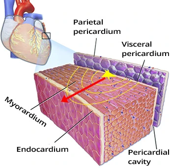
- Ổ ngoại vị ở ngoại tâm mạc trong nhịp nhanh thất
- Vector khử cực hai thất xuyên thành tới nội tâm mạc
- Có khởi đầu phức bộ QRS kéo dài
- Trong cơn nhịp nhanh thất, trên ECG:
- Sóng giả delta (pseudo-delta wave) làm rộng chân của các phức bộ QRS
- Đây không phải sóng delta gặp trong hội chứng WPW
- Khoảng RS kéo dài
- Thời gian tới đỉnh sóng R (R wave peak time – RWPT) kéo dài
- Sóng giả delta (pseudo-delta wave) làm rộng chân của các phức bộ QRS
Tiêu chuẩn ECG: | Định nghĩa: |
Sóng giả delta ≥ 35ms | Từ khởi đầu phức bộ QRS đến hết sóng giả delta, ở bất kỳ chuyển đạo trước tim nào |
Thời gian tới đỉnh sóng R kéo dài ≥ 85ms | Từ khởi đầu phức bộ QRS đến đỉnh sóng R, ở chuyển đạo V2 |
Khoảng RS ≥ 120ms | Từ khởi đầu phức bộ QRS đến đỉnh sóng S, ở bất kỳ chuyển đạo nào |
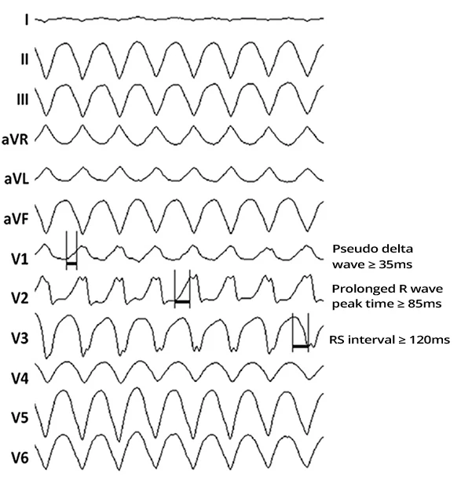
- Các tiêu chuẩn chỉ áp dụng cho nhịp nhanh thất dạng block nhánh phải (RBBB)
- Nhịp nhanh thất dạng block nhánh trái (LBBB) thường có ổ ngoại vị ở vùng vách liên thất
- Nơi không có ngoại tâm mạc
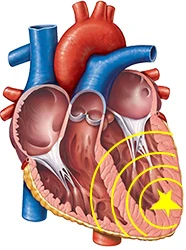
Nhịp nhanh thất
- ECG cho thấy nhịp nhanh thất
- Hình dạng QRS: RBBB
- Trục điện tim: Hướng lên trên
- Vùng chuyển tiếp: V4
- Ổ ngoại vị nằm:
- Ở thất trái, không kể vách liên thất
- Ở thành dưới
- Ở mỏm tim
- Ổ ngoại vị nằm ở nội tâm mạc
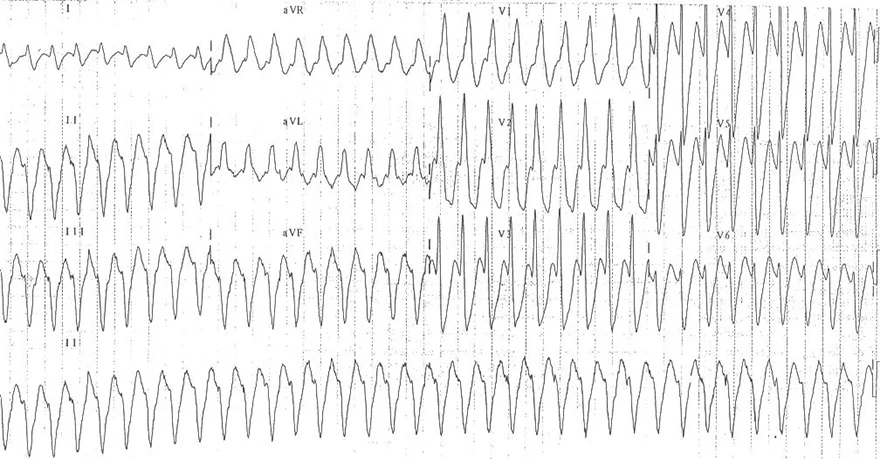
Nhịp nhanh thất
- ECG cho thấy nhịp nhanh thất
- Hình dạng QRS: RBBB
- Trục điện tim: Hướng lên trên
- Vùng chuyển tiếp: V3
- Ổ ngoại vị nằm:
- Ở thất trái, không kể vách liên thất
- Ở thành dưới
- Ở nền tim
- Ổ ngoại vị nằm ở nội tâm mạc
2. Nhịp nhanh thất đơn dạng (monomorphic VT)
Nhịp nhanh thất (ventricular tachycardia – VT)
- Nhịp nhanh thất (VT) có một ổ ngoại vị thất
(ectopic focus)- Bên dưới bó His
- Ổ này phát xung với tần số > 100/min.
- Cơ chế phát xung có thể là:
- Vòng vào lại (re-entry) (thường gặp nhất)
- Tăng tính tự động
- Hoạt động khởi kích (triggered activity)
- Cơ chế phát xung có thể là:
- Xuất hiện phức bộ QRS giãn rộng (>0.12s)
- Hiếm khi QRS hẹp (nhịp nhanh thất từ vùng vách liên thất, nhịp nhanh thất phân nhánh)
Phân loại cơ bản
- Nhịp nhanh thất là ít nhất 3 nhịp thất liên tiếp
- Nếu ít hơn thì đó là ngoại tâm thu thất (premature ventricular complex – PVC)
- Nhịp nhanh thất hầu như luôn xảy ra trên tim có tổn thương cấu trúc
- Nhịp nhanh thất phân loại theo thời gian kéo dài
- Nhịp nhanh thất không bền bỉ: có ít nhất 3 phức bộ QRS thất và kéo dài < 30s
- Nhịp nhanh thất bền bỉ: kéo dài > 30s
- Nhịp nhanh thất phân loại theo huyết động
- Huyết động ổn định: bệnh nhân ổn định về tuần hoàn
- Thường là nhịp nhanh thất với tần số < 160/min.
- Huyết động không ổn định: bệnh nhân không ổn định về tuần hoàn
- Thường là nhịp nhanh thất với tần số > 160/min.
- Không có định nghĩa chính xác huyết áp, mạch, tần số thở của bệnh nhân phải là bao nhiêu...
- Huyết động ổn định: bệnh nhân ổn định về tuần hoàn
Nhịp nhanh thất đơn dạng
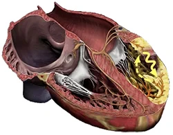
- Đây là dạng nhịp nhanh thất thường gặp nhất
- Xảy ra trên tim có tổn thương cấu trúc
- Thường nhất là do sẹo trong thất sau nhồi máu cơ tim
- Trong sẹo hình thành một vòng vào lại
- Và phát xung với tần số > 100/min.
- Tất cả phức bộ QRS đều đơn dạng (giống nhau)
- Do đó được gọi là đơn dạng
Nhịp nhanh thất đơn dạng
- Tần số: 170/min.
- Phức bộ QRS giãn rộng (> 0.12s)
- Tất cả phức bộ QRS đều giống nhau
- Sóng P không thấy được (bị che trong QRS rộng)
- Hai nhĩ được hoạt hoá theo đường ngược dòng
Vòng vào lại và sẹo thất
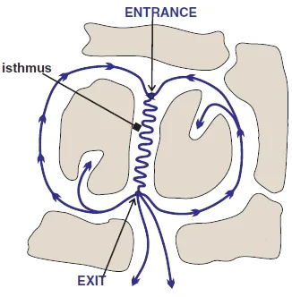
- Nhịp nhanh thất đơn dạng thường gặp nhất phát sinh do vòng vào lại trong sẹo
- Vòng vào lại trong sẹo thường nhất có dạng hình số 8
- Xung xoay vòng được khởi phát bởi một ngoại tâm thu đúng thời điểm
- Ngoại tâm thu thất (PVC), hiếm hơn là ngoại tâm thu nhĩ
- Điểm vào (entrance)
- Là điểm vào của ngoại tâm thu thất vào vòng vào lại
- Ngoại tâm thu thất phải đi vào điểm vào ngoài
- Thời kỳ trơ
- Ngoại tâm thu thất sau đó khởi phát xung xoay vòng
- Điểm thoát (exit site)
- Là điểm thoát của xung khỏi vòng vào lại
- Từ điểm thoát bắt đầu vector khử cực thất
- Tạo nên QRS giãn rộng (> 0.12s)
- Eo dẫn truyền (isthmus) là vùng dẫn truyền chậm trong vòng vào lại
ECG và nhịp nhanh thất đơn dạng
- Nhịp nhanh thất đơn dạng tạo ra trên ECG các dấu hiệu của nhịp nhanh thất
- Nhịp nhanh thất không bao giờ có đủ toàn bộ các dấu hiệu ECG
- Mỗi dấu hiệu có độ nhạy và độ đặc hiệu nhất định trong chẩn đoán nhịp nhanh thất
- Các phức bộ QRS giống nhau
- Tần số > 100/min.
- Phức bộ QRS giãn rộng (> 0.12s, thường nhất > 0.16s)
- Rất hiếm khi QRS hẹp (< 0.12s)
- Không có hình ảnh ECG điển hình của block nhánh
- Hình dạng RSr ở V1 (tai thỏ trái lớn hơn – left rabbit ear)
- Trục lệch phải cực độ "hướng tây bắc"
- Phân ly nhĩ – thất (AV dissociation)
- Nhịp bắt được (capture beat)
- Nhịp hỗn hợp (fusion beat)
- Đồng dạng các chuyển đạo trước tim (precordial concordance), dương hoặc âm
- Dấu hiệu Brugada
- Dấu hiệu Josephson
- Thời gian tới đỉnh sóng R (R wave peak time – RWPT) ở chuyển đạo II ≥ 50ms
Nhịp nhanh QRS rộng
- Mọi nhịp nhanh thất, kể cả nhịp nhanh thất đơn dạng, đều là nhịp nhanh QRS rộng (wide-complex tachycardia – WCT)
- Nhịp nhanh QRS rộng được định nghĩa là:
- Nhịp nhanh (tần số > 100/min.)
- Kèm phức bộ QRS giãn rộng (≥ 0.12s)
Nhịp nhanh QRS rộng
- Nhịp nhanh QRS rộng có thể có 3 nguyên nhân:
- Nhịp nhanh thất (chiếm 80% các nhịp nhanh QRS rộng)
- Hai thất được khử cực từ một ổ ngoại vị thất
- Nằm ở đâu đó bên dưới chỗ chia đôi của các nhánh bó
- Hai thất được khử cực từ một ổ ngoại vị thất
- Nhịp nhanh trên thất có dẫn truyền lệch hướng
- Hai thất chỉ được khử cực qua một nhánh bó
- Bệnh nhân có block nhánh có từ trước hoặc block nhánh chức năng
- Hai thất chỉ được khử cực qua một nhánh bó
- Nhịp nhanh trên thất có đường dẫn truyền phụ (AVRT ngược chiều – antidromic AVRT)
- Trong hội chứng WPW, hai thất và hai nhĩ được nối với nhau qua hai điểm (bộ nối nhĩ – thất và một đường dẫn truyền phụ)
- Nếu xung bắt đầu xoay vòng giữa nhĩ và thất (vòng vào lại) thì hình thành AVRT ngược chiều
- Hai thất được khử cực qua đường dẫn truyền phụ rồi lan trong cơ tim, không qua hệ thống dẫn truyền
- Nguyên nhân hiếm của nhịp nhanh QRS rộng:
- Rối loạn điện giải nặng (tăng kali máu)
- Ngộ độc thuốc chẹn kênh natri
- Nhịp nhanh do máy tạo nhịp
Nhịp nhanh thất đơn dạng
- Tất cả phức bộ QRS đều giãn rộng và giống nhau
- Các dấu hiệu của nhịp nhanh thất:
- Phức bộ QRS giãn rộng 0.2s
- Trục lệch phải cực độ (180° đến -90°)
- QRS âm (I, aVF)
- Dấu hiệu Brugada
- Khoảng RS > 100ms
- Dấu hiệu Josephson
- Khấc (notching) ở phần đi xuống của sóng S (II, III, aVF)
- Thời gian sóng R (Q) ở chuyển đạo II > 50ms
Nhịp nhanh thất đơn dạng
- Tất cả phức bộ QRS đều giãn rộng và giống nhau
- Các dấu hiệu của nhịp nhanh thất:
- Phức bộ QRS giãn rộng 0.2s
- Đồng dạng dương các chuyển đạo trước tim (V1-V6)
- Dấu hiệu Brugada
- Khoảng RS > 100ms (aVR, aVL)
- Ở nửa sau của ECG có nhịp đôi thất
- Xen kẽ nhịp bắt được và ngoại tâm thu thất
- Thời gian sóng R (Q) ở chuyển đạo II > 50ms
Nhịp nhanh thất đơn dạng
- Tất cả phức bộ QRS đều giãn rộng và giống nhau
- Các dấu hiệu của nhịp nhanh thất:
- Phức bộ QRS giãn rộng: 0.2s
- Ở nửa sau của chuyển đạo liên tục (rhythm strip) ghi được nhịp bắt được và nhịp hỗn hợp
- Chuyển đạo liên tục được ghi sau ECG 12 chuyển đạo
- Do đó các nhịp này không xuất hiện ở các chuyển đạo chi và các chuyển đạo trước tim
- Dấu hiệu Brugada
- Khoảng RS > 100ms (V6)
- Thời gian sóng R (Q) ở chuyển đạo II > 50ms
Nhịp nhanh thất đơn dạng
- Tất cả phức bộ QRS đều giãn rộng và giống nhau
- Các dấu hiệu của nhịp nhanh thất:
- Tần số 150/min.
- Phức bộ QRS giãn rộng 0.2s
- Dấu hiệu Josephson
- Khấc ở phần đi xuống của sóng S (III)
- Trục lệch phải cực độ (180° đến -90°)
- QRS âm (I, aVF)
Nhịp nhanh thất đơn dạng
- Tất cả phức bộ QRS đều giãn rộng và giống nhau
- Các dấu hiệu của nhịp nhanh thất:
- Tần số 180/min.
- Phức bộ QRS giãn rộng 0.18s
- Trục lệch phải cực độ (180° đến -90°)
- QRS âm (I, aVF)
- Ở V1 có sóng R một pha
- Tai thỏ trái lớn hơn
Nhịp nhanh thất đơn dạng
- Tất cả phức bộ QRS đều giãn rộng và giống nhau
- Các dấu hiệu của nhịp nhanh thất:
- Tần số 180/min.
- Phức bộ QRS giãn rộng 0.18s
- Trục lệch phải cực độ (180° đến -90°)
- QRS âm (I, aVF)
- Ở V1 có sóng R một pha
- Ở V6 có hình dạng rS
- Sóng r nhỏ và sóng S lớn
Nhịp nhanh thất đơn dạng
- Tất cả phức bộ QRS đều giãn rộng và giống nhau (bị sóng P làm biến dạng)
- Các dấu hiệu của nhịp nhanh thất:
- Tần số 180/min.
- Phức bộ QRS giãn rộng 0.14s
- Trục lệch phải cực độ (180° đến -90°)
- QRS âm (I, aVF)
- Ở V1 có hình dạng rsR (tai thỏ phải lớn hơn), là hình ảnh điển hình của block nhánh phải (RBBB)
- Tuy nhiên, block nhánh phải không có trục lệch phải cực độ
- Ở V1 có sóng R một pha
- Ở V6 có hình dạng rS
- Sóng r nhỏ và sóng S lớn
- Phân ly nhĩ – thất
- Là dấu hiệu then chốt của nhịp nhanh thất
- Sóng P làm biến dạng phức bộ QRS ở chuyển đạo thành dưới II và chuyển đạo V1
Phân ly nhĩ – thất
- Chuyển đạo V1 từ ECG trước đó
- Sóng P làm biến dạng phức bộ QRS
- Sóng P (mũi tên xanh) và phức bộ QRS độc lập với nhau
3. Nhịp nhanh thất đa dạng (polymorphic VT)
Nhịp nhanh thất (ventricular tachycardia – VT)
- Nhịp nhanh thất (VT) có một ổ ngoại vị thất
(ventricular ectopic focus)- Bên dưới bó His
- Ổ này phát xung với tần số > 100/min.
- Cơ chế phát xung có thể là:
- Vòng vào lại (re-entry) (thường gặp nhất)
- Tăng tính tự động
- Hoạt động khởi kích (triggered activity)
- Cơ chế phát xung có thể là:
- Hình thành các phức bộ QRS giãn rộng (>0.12s)
- Hiếm khi phức bộ QRS hẹp (nhịp nhanh thất từ vách liên thất, nhịp nhanh thất phân nhánh)
Phân loại cơ bản
- Nhịp nhanh thất (VT) gồm ít nhất 3 nhịp thất liên tiếp
- Nếu ít nhịp hơn thì được xếp là ngoại tâm thu thất (premature ventricular complex – PVC)
- Nhịp nhanh thất hầu như luôn xảy ra trên tim có tổn thương cấu trúc
- Nhịp nhanh thất theo thời gian kéo dài
- Nhịp nhanh thất không bền bỉ: ít nhất 3 phức bộ QRS thất, kéo dài < 30s
- Nhịp nhanh thất bền bỉ: kéo dài > 30s
- Nhịp nhanh thất theo huyết động
- Huyết động ổn định: bệnh nhân có huyết động ổn định
- Thường gặp ở nhịp nhanh thất có tần số < 160/min.
- Huyết động không ổn định: bệnh nhân có huyết động không ổn định
- Thường gặp ở nhịp nhanh thất có tần số > 160/min.
- Không được định nghĩa chính xác, dựa vào huyết áp, mạch và tần số thở của bệnh nhân...
- Huyết động ổn định: bệnh nhân có huyết động ổn định
Nhịp nhanh thất đơn dạng
- Nhịp nhanh thất đơn dạng (monomorphic VT) là loại nhịp nhanh thất thường gặp nhất
- Xảy ra trên tim có tổn thương cấu trúc
- Thường gặp nhất là kèm sẹo xơ hoá trong thất sau nhồi máu cơ tim
- Vòng vào lại (re-entry) hình thành trong sẹo xơ hoá
- Và phát xung với tần số > 100/min.
- Tất cả các phức bộ QRS đều đơn dạng (giống nhau)
- Vì vậy được gọi là đơn dạng
Nhịp nhanh thất đơn dạng
- Tần số: 170/min.
- Các phức bộ QRS giống nhau và giãn rộng (> 0.12s)
- Xung vào lại luôn thoát ra theo cùng một hướng
- Vì vậy tất cả các phức bộ QRS đều giống nhau
- Xung vào lại luôn thoát ra theo cùng một hướng
- Sóng P không thấy được
- Chúng bị che trong các phức bộ QRS giãn rộng
- Và nhĩ được hoạt hoá theo dẫn truyền ngược dòng
Nhịp nhanh thất đa dạng
- Thường gặp nhất trong nhồi máu cơ tim
- Nhịp nhanh thất đơn dạng thường gặp nhất trong sẹo xơ hoá sau nhồi máu
- Nhịp nhanh thất đa dạng (polymorphic VT) tiến triển thành rung thất (ventricular fibrillation – VF) thường xuyên hơn (so với nhịp nhanh thất đơn dạng)
- Cơ chế thường gặp nhất là vòng vào lại
- Torsades de Pointes
- Là nhịp nhanh thất đa dạng thường gặp nhất
- Xảy ra khi có khoảng QT kéo dài
- Cơ chế là hoạt động khởi kích
- Các phức bộ QRS đa dạng (thay đổi độ rộng và biên độ)
- Trong các thất thường có ít nhất 3 ổ ngoại vị
- Mỗi ổ khử cực thất theo một hướng khác nhau (do đó hình dạng các phức bộ QRS thay đổi)
- Trong các thất thường có ít nhất 3 ổ ngoại vị
- Theo số lượng ổ trong các thất, phân biệt 3 cơ chế của nhịp nhanh thất đa dạng
- Đa ổ (multifocal)
- Hai ổ (bifocal)
- Một ổ (unifocal)
Nhịp nhanh thất đa dạng đa ổ
- Trong các thất có ít nhất 3 ổ ngoại vị
- Vector thất từ mỗi ổ có hướng khác nhau
- Vì vậy các phức bộ QRS đa dạng
- Xảy ra trong nhồi máu cơ tim có thiếu máu cục bộ
- Có thể tiến triển thành rung thất
Nhịp nhanh thất đa dạng hai ổ
- Trong các thất có 2 ổ ngoại vị
- Vector từ mỗi ổ có hướng khác nhau
- Nếu hai ổ đối diện nhau thì trục QRS thay đổi khoảng 180°
- Xảy ra trong nhịp nhanh thất hai chiều (bidirectional VT)
- Ngộ độc digoxin
- Nhịp nhanh thất đa dạng do catecholamine (CPVT)
Nhịp nhanh thất đa dạng một ổ
- Trong các thất có 1 ổ ngoại vị
- Vector từ ổ này thay đổi hướng
- Vì vậy các phức bộ QRS đa dạng
- Vector từ ổ này thay đổi hướng
- Thường gặp nhất trong Torsades de Pointes (TdP)
- TdP xảy ra khi khoảng QT kéo dài
- Cơ chế là hoạt động khởi kích
- TdP là nhịp nhanh thất đa dạng thường gặp nhất
Phân loại nhịp nhanh thất đa dạng
- Có khoảng QT kéo dài (bệnh nhân có nhịp xoang với khoảng QT kéo dài)
- Torsades de Pointes (dạng nhịp nhanh thất đa dạng thường gặp nhất)
- Có khoảng QT bình thường (không phải Torsades de Pointes)
- Nhịp nhanh thất đa dạng do thiếu máu cục bộ (xảy ra trong nhồi máu cơ tim, có thể tiến triển thành rung thất)
- Nhịp nhanh thất đa dạng trong hội chứng Brugada (bệnh nhân có hội chứng Brugada, có thể dẫn tới nhịp nhanh thất đa dạng)
- Nhịp nhanh thất đa dạng do ngộ độc digoxin (là nhịp nhanh thất hai chiều)
- Nhịp nhanh thất đa dạng do catecholamine (là nhịp nhanh thất hai chiều)
ECG và nhịp nhanh thất đa dạng
- Có thể có các dấu hiệu đặc trưng của nhịp nhanh thất
- Tần số 100-300/min.
- Các phức bộ QRS giãn rộng (>0.12s)
- Độ rộng và biên độ thay đổi (các phức bộ QRS có dạng lượn sóng)
- Có thể tiến triển thành rung thất
- Khác biệt then chốt là trong rung thất, tim không còn hoạt động như một cái bơm
Nhịp nhanh thất đa dạng
- Trong các thất có ít nhất 3 ổ ngoại vị (thường gặp nhất)
- Độ rộng và biên độ các phức bộ QRS thay đổi
- Có thể có các dấu hiệu của nhịp nhanh thất
- Cơ chế thường gặp nhất là hoạt động khởi kích (Torsades de Pointes)
- Tần số 100-300/min. (280/min. trên ECG này)
- Tim vẫn hoạt động như một cái bơm
- Ở tần số > 160/min., tim dần mất chức năng bơm
Nhịp nhanh thất đa dạng và rung thất
- Nhịp nhanh thất đa dạng và rung thất có hình ảnh ECG giống nhau
- Cả hai đều có các phức bộ QRS giãn rộng, thay đổi độ rộng và biên độ
- ECG không có tiêu chuẩn chính xác để phân biệt nhịp nhanh thất đa dạng với rung thất
- Khác biệt căn bản là trong rung thất, tim không còn hoạt động như một cái bơm
- Bệnh nhân có huyết động không ổn định
- Khác biệt căn bản là trong rung thất, tim không còn hoạt động như một cái bơm
Rung thất
- Trong các thất có nhiều ổ
- Cơ chế thường gặp nhất là vòng vào lại nhỏ
- Tần số 300-450/min.
- Độ rộng và biên độ các phức bộ QRS thay đổi
- Các phức bộ QRS thấp và biên độ không xác định rõ
- Tim không hoạt động như một cái bơm
- Ở tần số cao như vậy, thời kỳ tâm trương không hiệu quả
- Đây là khác biệt căn bản so với nhịp nhanh thất đa dạng
- Các dấu hiệu của nhịp nhanh thất không có
- Biên độ các phức bộ QRS giảm dần và khoảng 2 phút sau xuất hiện vô tâm thu
Nhịp nhanh thất đa dạng (Torsades de Pointes)
- Tần số 290/min.
- Các phức bộ QRS giãn rộng, thay đổi biên độ và độ rộng
- Bệnh nhân có hạ kali máu nặng (1.7 mmol/l)
- Sóng T đảo
- Sóng U
- Khoảng QT kéo dài
- Ngoại tâm thu thất xuất hiện trên sóng T (hiện tượng R trên T)
- Trên ECG là Torsades de Pointes
- Tức nhịp nhanh thất đa dạng xảy ra khi khoảng QT kéo dài
- Torsades de Pointes có thể tiến triển thành rung thất
- Tần số tăng và biên độ các phức bộ QRS giảm
- Tim mất chức năng bơm
Nhịp nhanh thất đa dạng (Torsades de Pointes)
- Tần số 290/min.
- Các phức bộ QRS giãn rộng, thay đổi biên độ và độ rộng
- Bệnh nhân cũng có hạ kali máu nặng (1.7 mmol/l)
- Sóng T đảo
- Sóng U
- Khoảng QT kéo dài
- Ngoại tâm thu thất xuất hiện trên sóng T (hiện tượng R trên T)
- Trên ECG là Torsades de Pointes
- Tức nhịp nhanh thất đa dạng xảy ra khi khoảng QT kéo dài
- Trường hợp này Torsades de Pointes tự chấm dứt (tự hết) sau khoảng 5 giây
Nhịp nhanh thất đa dạng
- Tần số: 200/min.
- Các phức bộ QRS giãn rộng và thay đổi độ rộng, biên độ
- Bệnh nhân có ECG trước đó cho thấy STEMI thành dưới
- Nhịp nhanh thất đa dạng trong nhồi máu thường tiến triển thành rung thất
- Không thấy khoảng QT kéo dài khi có nhịp xoang
- Trường hợp này không phải Torsades de Pointes
- Nhịp nhanh thất đa dạng xảy ra trong giai đoạn thiếu máu cục bộ của nhồi máu
- Nhịp nhanh thất đơn dạng xảy ra trong sẹo xơ hoá sau nhồi máu
- Trên chuyển đạo II liên tục (rhythm strip) thấy các phức bộ QRS biến dạng kèm sóng P (phân ly nhĩ – thất)
- Phân ly nhĩ – thất là dấu hiệu then chốt của nhịp nhanh thất
Nhịp nhanh thất đa dạng (Torsades de Pointes) và rung thất
- Khoảng QT kéo dài (480ms)
- Nhịp đôi thất (ventricular bigeminy)
- Ban đầu, sau mỗi nhịp xoang là một ngoại tâm thu thất
- Hiện tượng R trên T
- Ngoại tâm thu thất xuất hiện trong sóng T (trong thời kỳ dễ tổn thương, vulnerable period)
- Sau đó xuất hiện Torsades de Pointes (TdP)
- Tần số: 300/min.
- Các phức bộ QRS giãn rộng, thay đổi biên độ và độ rộng
- Khoảng 5 giây sau, xuất hiện rung thất
- Biên độ QRS giảm
- Tần số tăng lên khoảng 310/min.
- Tim mất chức năng bơm (bệnh nhân mất ý thức)
- Bệnh nhân cần điều trị cấp cứu - khử rung
Nhịp nhanh thất đa dạng (nhịp nhanh thất hai chiều)
- Tần số: 160/min.
- Các phức bộ QRS giãn rộng (>0.12s)
- Mỗi phức bộ QRS thứ hai lại có hướng ngược lại
- Trục điện tim thay đổi khoảng 180°
- Đây là nhịp nhanh thất hai chiều
- Thường gặp nhất trong ngộ độc digoxin
3.1. Torsades de Pointes (TdP)
Nhịp nhanh thất đa dạng (polymorphic ventricular tachycardia – VT)
- Nhịp nhanh thất đa dạng thường gặp nhất sau nhồi máu cơ tim
- Nhịp nhanh thất đơn dạng xuất hiện trong sẹo xơ hoá sau nhồi máu
- Nhịp nhanh thất đa dạng thường tiến triển thành rung thất (ventricular fibrillation – VF)
- Cơ chế thường gặp nhất là vòng vào lại (re-entry)
- Cơ chế của nhịp nhanh thất đa dạng có thể là:
- Đa ổ
- Hai ổ
- Một ổ
Torsades de Pointes
- Được mô tả đầu tiên năm 1966 bởi bác sĩ người Pháp François Dessertenne
- Là nhịp nhanh thất đa dạng thường gặp nhất
- Tần số tim 160-250/min.
- Là nhịp nhanh thất đa dạng xuất hiện khi có khoảng QT kéo dài
- TdP có kiểu khởi phát đặc trưng
- Được khởi kích bởi một nhịp ngoại tâm thu thất (hiện tượng R trên T – R on T)
- Cơ chế là hoạt động khởi kích (triggered activity)
- Lúc khởi phát xuất hiện khoảng RR ngắn – dài – ngắn điển hình
- Được khởi kích bởi một nhịp ngoại tâm thu thất (hiện tượng R trên T – R on T)
- Trong cơn TdP, các phức bộ QRS thay đổi biên độ, "xoắn" quanh trục của chúng
- Vì hướng của vector điện chính thay đổi
- TdP được dịch là "xoắn đỉnh" ("các đỉnh nhảy múa")
- Chu kỳ phức bộ QRS lặp lại khoảng mỗi 5-20 nhịp
- Là nhịp nhanh thất không bền bỉ, "ngắn ngủi"
- Vì tự hết trong vòng 30 giây
- Hiếm khi không tự hết và có thể tiến triển thành rung thất
Khoảng QT kéo dài
- QT_C = 0.58s (QT_C > 440ms)
Torsades de Pointes
- Bệnh nhân có khoảng QT kéo dài trong nhịp xoang
- Torsades de Pointes là nhịp nhanh thất đa dạng xuất hiện khi có khoảng QT kéo dài
- Lúc khởi phát ghi nhận trình tự ngắn – dài – ngắn (short–long–short – SLS) điển hình (khoảng RR ngắn – dài – ngắn)
- Tiếp sau đó là hiện tượng R trên T
- Torsades de Pointes
- Các phức bộ QRS giãn rộng (>0.12s) thay đổi về biên độ và độ rộng
Torsades de Pointes so với nhịp nhanh thất đa dạng
Nhịp nhanh thất đa dạng
- Theo ECG đã cho, không thể xác định đây là TdP hay nhịp nhanh thất đa dạng
- Không thấy được lúc khởi phát cơn nhịp nhanh
- Không rõ bệnh nhân có khoảng QT kéo dài hay không
- Nhịp nhanh thất đa dạng và Torsades de Pointes có hình ảnh ECG giống nhau trong cơn nhịp nhanh (như trên ECG này)
- Torsades de Pointes là nhịp nhanh thất đa dạng xuất hiện khi có khoảng QT kéo dài
- Phân biệt nhịp nhanh thất đa dạng với Torsades de Pointes là quan trọng đối với điều trị
- Không được điều trị Torsades de Pointes bằng thuốc chống loạn nhịp gây kéo dài khoảng QT
Phân tán tái cực giữa hai thất (interventricular dispersion of repolarization)
- Điện thế hoạt động khi dẫn truyền qua cơ tim không có hình dạng giống nhau
- Khác biệt chính là thời gian tái cực
- Phân tán tái cực giữa hai thất
- Là sự khác biệt về thời gian tái cực giữa hai thất
- Đường cong điện thế hoạt động có thời gian khác nhau (tái cực) ở:
- Thất phải
- Mỏm tim
- Thất trái
Phân tán tái cực xuyên thành
- Điện thế hoạt động có thời gian khác nhau
- Kể cả khi dẫn truyền qua thành cơ tim
- Phân tán tái cực xuyên thành
- Là sự khác biệt về thời gian tái cực trong thành thất, ở:
- Nội tâm mạc
- Lớp giữa cơ tim (tế bào M)
- Ngoại tâm mạc
- Là sự khác biệt về thời gian tái cực trong thành thất, ở:
ECG và phân tán tái cực xuyên thành
- Phân tán tái cực xuyên thành (transmural dispersion of repolarization – TDR):
- Đầu tiên, ngoại tâm mạc tái cực
- Sau đó là nội tâm mạc
- Cuối cùng là lớp giữa cơ tim (tế bào M)
- TDR trên ECG tương ứng với phần đi xuống của sóng T
- Phần này của sóng T được gọi là thời kỳ dễ tổn thương (vulnerable period)
- Hiện tượng R trên T là một ngoại tâm thu thất
- Xảy ra trong thời kỳ dễ tổn thương
- Có thể khởi kích Torsades de Pointes
Khoảng QT kéo dài
Khoảng QT kéo dài và phân tán tái cực xuyên thành
- Phân tán tái cực xuyên thành (TDR)
- Chủ yếu là sự khác biệt giữa tái cực của ngoại tâm mạc và của lớp giữa cơ tim (tế bào M)
- Nếu bệnh nhân có khoảng QT kéo dài
- Tái cực của lớp giữa cơ tim (tế bào M) bị kéo dài chủ yếu
- Kéo dài tái cực của ngoại tâm mạc không đáng kể
- Do đó phân tán tái cực xuyên thành cũng bị kéo dài
- Khoảng cách giữa tái cực của ngoại tâm mạc và của lớp giữa cơ tim (tế bào M) lớn hơn
- Khả năng tăng lên rằng một ngoại tâm thu thất sẽ "rơi" vào thời kỳ dễ tổn thương
- Vì thời kỳ dễ tổn thương bị kéo dài
- Tái cực của lớp giữa cơ tim (tế bào M) bị kéo dài chủ yếu
Hậu khử cực sớm và Torsades de Pointes
Hậu khử cực sớm và Torsades de Pointes
- Khi có khoảng QT kéo dài
- Điện thế hoạt động bị kéo dài - chủ yếu là tái cực (đường cong màu xanh lục)
- Tái cực kéo dài xuất hiện trên ECG trong nhịp xoang dưới dạng khoảng QT kéo dài
- Hậu khử cực sớm (early afterdepolarization – EAD)
- Là một điện thế hoạt động mới xuất hiện sớm hơn (trong lúc tái cực)
- Trên ECG biểu hiện thành ngoại tâm thu thất (hiện tượng R trên T)
- Chính nó khởi kích Torsades de Pointes
- TdP sau đó được duy trì bởi cơ chế vòng vào lại do phân tán tái cực xuyên thành
Vòng vào lại và Torsades de Pointes
- Phân tán tái cực xuyên thành kéo dài
- Tạo ra cơ chất cho vòng vào lại
- Thay đổi thời kỳ trơ của các lớp thành cơ tim
- Xung động có thể bắt đầu xoay vòng trong thành cơ tim
- Ngoại tâm thu thất (hiện tượng R trên T)
- Khởi kích sự xoay vòng của xung động qua các lớp thành cơ tim
- Cơ chế duy trì TdP là vòng vào lại trong thành cơ tim
ECG và Torsades de Pointes
- Trong nhịp xoang, bệnh nhân có khoảng QT kéo dài
- Tần số 160-250/min.
- Các phức bộ QRS giãn rộng (>0.12s)
- Độ rộng và biên độ thay đổi (QRS "nhảy múa quanh trục của chúng")
- Thường bắt đầu bằng một trình tự SLS (khoảng ngắn – dài – ngắn)
- Trên ECG là khoảng RR ngắn – dài – ngắn
- Thường biểu hiện nhất dưới dạng nhịp nhanh thất không bền bỉ
- Tự hết trong vòng 30s
Torsades de Pointes
- Trình tự SLS (khoảng ngắn – dài – ngắn "short-long-short interval")
- Khoảng ngắn
- Nhịp xoang được tiếp nối bởi một ngoại tâm thu thất (với khoảng ghép ngắn)
- Khoảng dài
- Sau ngoại tâm thu thất là một khoảng nghỉ bù, rồi đến một nhịp xoang
- Khoảng ngắn
- Sau khoảng nghỉ bù lại xuất hiện một ngoại tâm thu thất khác (với khoảng ghép ngắn)
- Hiện tượng R trên T
- Đây là lúc khởi phát Torsades de Pointes
- Sau khoảng nghỉ bù lại xuất hiện một ngoại tâm thu thất khác (với khoảng ghép ngắn)
- Khoảng ngắn
- Torsades de Pointes
- Các phức bộ QRS giãn rộng thay đổi về biên độ và độ rộng
ECG và khởi phát Torsades de Pointes
- Dựa vào kiểu khởi phát của TdP trên ECG, có 2 loại TdP:
- Torsades de Pointes phụ thuộc khoảng nghỉ
- Torsades de Pointes kiểu SLS
- Torsades de Pointes không phụ thuộc khoảng nghỉ
- Torsades de Pointes khoảng ghép ngắn (short-coupled)
- Rất hiếm (khoảng 14 ca đã được mô tả)
- Torsades de Pointes phụ thuộc khoảng nghỉ
Torsades de Pointes phụ thuộc khoảng nghỉ
Torsades de Pointes phụ thuộc khoảng nghỉ
- (Torsades de Pointes kiểu SLS phụ thuộc khoảng nghỉ)
- Biến thể thường gặp nhất
- Có trình tự SLS (khoảng ngắn – dài – ngắn)
- Nhịp xoang (1)
- Ngoại tâm thu thất (2)
- Nhịp xoang (3)
- Ngoại tâm thu thất (4)
- Trước cơn TdP có một khoảng nghỉ trong khoảng RR (2 - 3)
- Bệnh nhân có khoảng QT kéo dài (trong nhịp xoang)
Torsades de Pointes không phụ thuộc khoảng nghỉ
Torsades de Pointes không phụ thuộc khoảng nghỉ
- (Torsades de Pointes khoảng ghép ngắn)
- Hiếm gặp (khoảng 14 ca đã được ghi nhận)
- Bắt đầu bằng một ngoại tâm thu thất (1)
- Với khoảng ghép rút ngắn < 300ms
- Các ngoại tâm thu này cũng hiện diện trong nhịp xoang
- Không có khoảng nghỉ RR trước cơn TdP
- Tiền sử gia đình có đột tử
- Gợi ý căn nguyên di truyền (bệnh lý kênh ion bẩm sinh)
- Gặp ở người trẻ
- Không có tổn thương cấu trúc tim
- Biểu hiện bằng ngất (mất ý thức) hoặc đột tử
- Thường biểu hiện dưới dạng nhịp nhanh thất không bền bỉ
- Không đáp ứng với điều trị chống loạn nhịp, giống như trong nhịp nhanh thất đa dạng
- Bệnh nhân có khoảng QT bình thường
- Ngoại tâm thu có lẽ gây phân tán xuyên thành của cơ tim, có thể duy trì vòng vào lại?
- Torsades de Pointes khoảng ghép ngắn không phải là nhịp nhanh thất đa dạng
- Dù có khoảng QT bình thường
- Đây là một nghịch lý, và việc bàn luận mang tính học thuật hơn là lâm sàng
Nhịp xoang và chuỗi đôi thất
- Bệnh nhân trẻ và không có tổn thương cấu trúc tim
- Bệnh nhân đến viện vì ngất tái diễn (mất ý thức)
- Nhịp xoang
- Khoảng QT không kéo dài (400ms)
- Chuỗi đôi thất (2 ngoại tâm thu liên tiếp)
- Khoảng ghép bị rút ngắn < 300ms
- Bệnh nhân được đeo máy Holter ECG 24 giờ
Torsades de Pointes (TdP khoảng ghép ngắn)
- Đây là ECG của bệnh nhân ở phần trước
- Holter ECG 24 giờ đã ghi được Torsades de Pointes
- Sau nhịp xoang là một ngoại tâm thu thất với khoảng ghép rút ngắn <300ms
- Đã khởi kích một nhịp nhanh thất không bền bỉ Torsades de Pointes
- Các phức bộ QRS giãn rộng (>0.12s) "nhảy múa" thay đổi về độ rộng và biên độ
- Đã khởi kích một nhịp nhanh thất không bền bỉ Torsades de Pointes
- Bệnh nhân không có khoảng QT kéo dài
- Đây không phải nhịp nhanh thất đa dạng, mà là TdP khoảng ghép ngắn
- Torsades de Pointes khoảng ghép ngắn
- Là một dạng TdP rất hiếm gặp
Torsades de Pointes (trình tự SLS)
- Bệnh nhân có khoảng QT kéo dài
- Ở đoạn đầu thấy trình tự SLS điển hình (khoảng RR ngắn – dài – ngắn)
- Tiếp sau là hiện tượng R trên T và Torsades de Pointes
Torsades de Pointes (trình tự SLS) và rung thất
- Khoảng QT kéo dài khoảng 480ms
- Trình tự SLS
- Tiếp sau là hiện tượng R trên T và Torsades de Pointes
- Sau khoảng 5 giây TdP, rung thất xuất hiện
- Biên độ các phức bộ QRS giảm và tần số tăng
- Bệnh nhân cần điều trị cấp cứu - khử rung
Torsades de Pointes (trình tự SLS)
- Bệnh nhân có khoảng QT kéo dài
- Chuyển đạo II liên tục (rhythm strip):
- Sau khi TdP kết thúc là một trình tự SLS
(khoảng RR ngắn – dài – ngắn) - Sau trình tự SLS, Torsades de Pointes tái xuất hiện
- "Các phức bộ QRS nhảy múa"
- Sau khi TdP kết thúc là một trình tự SLS
- TdP thường là nhịp nhanh thất không bền bỉ
- Tự kết thúc trong vòng 30 giây
- Bệnh nhân có các cơn TdP
- Các đợt TdP tái diễn tự kết thúc trong vòng 30 giây
4. Nhịp nhanh thất vô căn (idiopathic VT)
Nhịp nhanh thất
- Nhịp nhanh thất (ventricular tachycardia – VT) khởi phát từ một ổ ngoại vị thất (ectopic focus)
- Bên dưới bó His
- Ổ ngoại vị phát ra các xung động với tần số > 100/min.
- Cơ chế phát xung có thể là:
- Vòng vào lại (re-entry) (thường gặp nhất)
- Tăng tính tự động
- Hoạt động khởi kích (triggered activity)
- Cơ chế phát xung có thể là:
- Nhịp nhanh thất tạo ra các phức bộ QRS giãn rộng (>0.12s)
- Hiếm khi phức bộ QRS hẹp (<0.12s):
- Nhịp nhanh thất từ vùng vách liên thất
- Nhịp nhanh thất phân nhánh
- Hiếm khi phức bộ QRS hẹp (<0.12s):
- Nhịp nhanh thất gồm ít nhất 3 nhịp thất liên tiếp
- Nếu ít hơn thì đó là ngoại tâm thu thất (premature ventricular complex – PVC)
- Nhịp nhanh thất hầu như luôn xảy ra trên tim có tổn thương cấu trúc
- Thường gặp nhất là trên sẹo xơ hoá (scar) sau nhồi máu cơ tim
Nhịp nhanh thất vô căn
- Nhịp nhanh thất vô căn xảy ra trên tim bình thường về cấu trúc
- (kể cả khi không có rối loạn điện giải hay khoảng QT kéo dài)
- 10% các trường hợp nhịp nhanh thất là vô căn
- 90% nhịp nhanh thất xảy ra trên tim có tổn thương cấu trúc
- Trong nhịp nhanh thất vô căn, ổ ngoại vị xuất hiện ở vùng:
- Đường ra của các thất
- Các phân nhánh (fascicle) của nhánh bó Tawara bên trái
- Có 3 thể nhịp nhanh thất vô căn
- Nhịp nhanh thất từ đường ra thất phải
- Nhịp nhanh thất từ đường ra thất trái
- Nhịp nhanh thất phân nhánh
Nhịp nhanh thất từ các đường ra
- Nhịp nhanh thất trong bệnh cơ tim thất phải gây loạn nhịp (ARVD) ở vùng đường ra
- Đây không phải nhịp nhanh thất vô căn, vì có thất phải biến đổi về cấu trúc (bao gồm cả đường ra)
- Nhịp nhanh thất từ đường ra phần lớn là vô căn
- Có 2 loại nhịp nhanh thất vô căn từ đường ra:
- Nhịp nhanh thất từ đường ra thất phải
- Nhịp nhanh thất từ đường ra thất trái
- Cơ chế là hoạt động khởi kích
- Chúng đáp ứng tốt với adenosine, nên thường được gọi là nhịp nhanh thất nhạy adenosine
- Nhịp nhanh thất trong bệnh cơ tim thất phải gây loạn nhịp không đáp ứng với adenosine
- Nhịp nhanh thất từ đường ra là
- 90% nhịp nhanh thất đơn dạng không bền bỉ
- Đôi khi chỉ có nhiều ngoại tâm thu thất mà không có nhịp nhanh thất
- Ngoại tâm thu xuất hiện lúc nghỉ và biến mất khi gắng sức thể lực
- 10% nhịp nhanh thất đơn dạng bền bỉ
- Xuất hiện khi gắng sức thể lực
- 90% nhịp nhanh thất đơn dạng không bền bỉ
Nhịp nhanh thất từ đường ra thất phải
- Nhịp nhanh từ đường ra thất phải (RVOT)
- Nhịp nhanh thất từ đường ra thất phải
- Đây là nhịp nhanh thất vô căn thường gặp nhất
- Chiếm 70% tất cả các nhịp nhanh thất vô căn
- Xảy ra ở người trẻ tuổi 20-50 tuổi
- Khởi kích bởi stress thể lực hoặc cảm xúc
- Vector chính hướng xuống dưới, về phía thất trái
- Trên ECG:
- Dạng block nhánh trái (LBBB)
- QRS dương ở các chuyển đạo dưới (II, III, aVF)
- Vùng chuyển tiếp > V2
Nhịp nhanh thất từ đường ra thất phải
- Tần số: 160/min.
- Phức bộ QRS giãn rộng (>0.12s)
- Vùng chuyển tiếp (V3)
- Vị trí vùng chuyển tiếp giúp phân biệt nhịp nhanh thất từ đường ra phải và trái
- Dạng block nhánh trái
- Phức bộ QRS giãn rộng
- S sâu ở V1
- R chiếm ưu thế ở V6
- Trục thẳng đứng (+ 90°)
- QRS dương ở II, III, aVF
- Phân ly nhĩ – thất
- Thấy sóng P ở chuyển đạo liên tục II (rhythm strip), làm biến dạng các phức bộ QRS
- Phân ly nhĩ – thất là dấu hiệu cơ bản của nhịp nhanh thất
Nhịp nhanh thất từ đường ra thất trái
- Nhịp nhanh từ đường ra thất trái (LVOT)
- Nhịp nhanh thất từ đường ra thất trái
- Chiếm 20% các nhịp nhanh thất vô căn
- Các vị trí khởi phát thường gặp:
- Gốc động mạch chủ, gần chỗ xuất phát của các động mạch vành (xoang Valsalva)
- Phần nền của thất trái
- Ngoại tâm mạc của đường ra thất trái
- Vector chính hướng xuống dưới, về phía thất trái
- Không hướng về thất phải vì thất trái có khối cơ dày hơn
- Trên ECG, hình ảnh giống dạng nhịp nhanh thất từ đường ra thất phải:
- Dạng block nhánh trái
- QRS dương ở các chuyển đạo dưới (II, III, aVF)
- Nhịp nhanh thất từ đường ra thất trái có thêm các đặc điểm:
- Sóng R rộng ở V1-2 (hơn 50% bề rộng QRS)
- Sóng R cao hơn ở V1-2 (hơn 30% sóng S)
- Vùng chuyển tiếp ≤ V2
- Khấc (notching) ở nhánh lên của sóng R (V4-6)
Nhịp nhanh thất từ đường ra thất trái
- Tần số tim: 140/min.
- Phức bộ QRS giãn rộng (>0.12s)
- Dạng block nhánh trái
- Phức bộ QRS giãn rộng
- Sóng S sâu (V1)
- Sóng R chiếm ưu thế (V6)
- Trục thẳng đứng (+100°)
- QRS dương ở (II, III, aVF)
- Vùng chuyển tiếp (V3)
- Tuy vậy đây vẫn là nhịp nhanh thất từ đường ra thất trái vì có thêm các đặc điểm:
- Sóng R rộng ở V1 (hơn 50% bề rộng QRS)
- Sóng R cao hơn ở V1 (hơn 30% sóng S)
- Tuy vậy đây vẫn là nhịp nhanh thất từ đường ra thất trái vì có thêm các đặc điểm:
Nhịp nhanh thất phân nhánh
- Nhịp nhanh thất phân nhánh rất hiếm
- Chiếm 10% các nhịp nhanh thất vô căn
- Cơ chế là vòng vào lại
- Vòng vào lại đi qua một phân nhánh và vùng cơ tim kế cận
- Đường dẫn truyền nhanh là phân nhánh (trước hoặc sau)
- Đường dẫn truyền chậm là vùng cơ tim kế cận phân nhánh đó
- Vòng vào lại đi qua một phân nhánh và vùng cơ tim kế cận
- Xảy ra chủ yếu ở nam giới 15-40 tuổi
- Được gọi là nhịp nhanh thất nhạy verapamil
- Đáp ứng tốt (cắt cơn) sau khi dùng verapamil
- Theo vị trí của vòng vào lại, có 3 thể nhịp nhanh thất phân nhánh:
- Nhịp nhanh thất phân nhánh sau
- Vòng vào lại nằm ở phân nhánh trái sau
- Trên ECG có block phân nhánh trái trước (left anterior hemiblock) + block nhánh phải (RBBB)
- Nhịp nhanh thất phân nhánh trước
- Vòng vào lại nằm ở phân nhánh trái trước
- Trên ECG có block phân nhánh trái sau + RBBB
- Nhịp nhanh thất phân nhánh vách trên
- Vòng vào lại đi qua cả hai phân nhánh và vùng cơ tim kế cận
- Trên ECG có phức bộ QRS hẹp và dạng block nhánh trái (LBBB) hoặc RBBB
- Đây là nhịp nhanh thất có phức bộ QRS hẹp
- Nhịp nhanh thất phân nhánh sau
- Chú ý nhịp nhanh liên phân nhánh (interfascicular tachycardia)
- Xảy ra trên tim có tổn thương cấu trúc (không phải vô căn)
- Thường gặp nhất là kèm bệnh cơ tim giãn
- Vòng vào lại đi qua cả phân nhánh trái trước và phân nhánh trái sau
- Đường dẫn truyền nhanh nằm ở một phân nhánh
- Đường dẫn truyền chậm nằm ở phân nhánh còn lại
- Xảy ra trên tim có tổn thương cấu trúc (không phải vô căn)
Nhịp nhanh thất phân nhánh trước
- Tần số tim: 150/min.
- Phức bộ QRS giãn rộng giới hạn (0.12s)
- Block nhánh phải (RBBB)
- rSR' ở V1 – tai thỏ phải lớn hơn
- Sóng S sâu và rộng ở V6
- Block phân nhánh trái sau (trục lệch phải +120º)
- QRS âm ở I
- QRS dương ở aVF, III
- Có thể là nhịp nhanh trên thất kèm block hai phân nhánh (RBBB + block phân nhánh trái sau)
- Tuy nhiên cơn nhịp nhanh vẫn tiếp tục sau khi dùng adenosine
- Adenosine làm chậm nút nhĩ – thất và cắt cơn nhịp nhanh trên thất
- Cơn nhịp nhanh hết sau khi dùng verapamil
- Đây là nhịp nhanh nhạy verapamil, đặc trưng cho nhịp nhanh thất phân nhánh
- Đây là nhịp nhanh thất phân nhánh (vòng vào lại nằm ở phân nhánh trái trước)
- Dù không có các dấu hiệu điển hình của nhịp nhanh thất
Nhịp nhanh thất phân nhánh sau
- Tần số tim: 100/min.
- Phức bộ QRS giãn rộng giới hạn (0.12s)
- Block nhánh phải (RBBB)
- Sóng R chiếm ưu thế ở V1
- Sóng S sâu và rộng ở V6
- Block phân nhánh trái trước
- QRS âm ở II, aVF
- QRS dương ở I
- ECG có các dấu hiệu kinh điển của nhịp nhanh thất
- Phân ly nhĩ – thất
- Trên chuyển đạo liên tục II thấy các sóng P (mũi tên) độc lập với các phức bộ QRS
- Nhịp hỗn hợp (phức bộ QRS thứ 6 trên chuyển đạo liên tục II)
- Nhịp bắt được (phức bộ QRS thứ 7 trên chuyển đạo liên tục II – dấu hoa thị)
- Phân ly nhĩ – thất
- Đây là nhịp nhanh thất phân nhánh (vòng vào lại nằm ở phân nhánh trái sau)
4.1. Nhịp nhanh thất từ đường ra thất phải (RVOT VT)
Nhịp nhanh thất vô căn
- Nhịp nhanh thất vô căn (idiopathic ventricular tachycardia – VT) xảy ra trên tim không có tổn thương cấu trúc
- (không có rối loạn điện giải, không có khoảng QT kéo dài)
- 10% các nhịp nhanh thất là vô căn
- 90% nhịp nhanh thất xảy ra trên tim có tổn thương cấu trúc
- Trong nhịp nhanh thất vô căn, ổ ngoại vị (ectopic focus) xuất phát từ vùng:
- Các đường ra của thất
- Các phân nhánh (fascicle) của nhánh trái
- Có 3 loại nhịp nhanh thất vô căn
- Nhịp nhanh thất từ đường ra thất phải (RVOT)
- Nhịp nhanh thất từ đường ra thất trái (LVOT)
- Nhịp nhanh thất phân nhánh
Nhịp nhanh thất từ các đường ra
- Nhịp nhanh thất trong bệnh cơ tim thất phải gây loạn nhịp ở vùng đường ra
- Đây không phải nhịp nhanh thất vô căn, vì thất phải (và đường ra) đã biến đổi về cấu trúc
- Nhịp nhanh thất từ vùng đường ra phần lớn là vô căn
- Có 2 loại nhịp nhanh thất vô căn từ đường ra:
- Nhịp nhanh thất từ đường ra thất phải (RVOT)
- Nhịp nhanh thất từ đường ra thất trái (LVOT)
- Cơ chế là hoạt động khởi kích (triggered activity)
- Đáp ứng tốt với adenosine, nên thường được gọi là nhịp nhanh thất nhạy adenosine
- Nhịp nhanh thất từ đường ra trong bệnh cơ tim thất phải gây loạn nhịp không đáp ứng với adenosine
- Nhịp nhanh thất từ đường ra là
- 90% nhịp nhanh thất đơn dạng không bền bỉ
- Đôi khi chỉ có nhiều ngoại tâm thu thất (premature ventricular complex – PVC) mà không có nhịp nhanh thất
- Ngoại tâm thu xuất hiện khi nghỉ và biến mất khi gắng sức thể lực
- 10% nhịp nhanh thất đơn dạng bền bỉ
- Xuất hiện khi gắng sức thể lực
- 90% nhịp nhanh thất đơn dạng không bền bỉ
Nhịp nhanh thất từ đường ra thất phải
- Nhịp nhanh thất từ đường ra thất phải (RVOT)
- Là nhịp nhanh thất vô căn thường gặp nhất
- Chiếm 70% tất cả các nhịp nhanh thất vô căn
- Vị trí thường gặp của ổ ngoại vị là
- 1-2 cm dưới mức động mạch phổi
- Ở phía vách liên thất
- Cơ chế là hoạt động khởi kích
- Xảy ra ở người trẻ tuổi, 20-50 tuổi
- Khởi phát bởi gắng sức thể lực hoặc stress cảm xúc
- Đáp ứng tốt với adenosine (là nhịp nhanh thất nhạy adenosine)
- Vector điện chính hướng về phía thất trái và xuống dưới
Bệnh cơ tim thất phải gây loạn nhịp
- Bệnh cơ tim thất phải gây loạn nhịp (ARVD)
- Là bệnh di truyền bẩm sinh
- Có tái cấu trúc mỡ và xơ (xơ hoá) của thất phải
- Thất phải bị biến đổi về cấu trúc
- Nếu nhịp nhanh thất xảy ra ở vùng đường ra trên ARVD
- Thì nhịp nhanh thất này không còn là vô căn
- Cùng một hình ảnh ECG được tạo ra bởi:
- Nhịp nhanh thất vô căn từ đường ra thất phải
- Nhịp nhanh thất từ đường ra thất phải trên ARVD
- ARVD được chẩn đoán bằng
- Siêu âm tim - cho thấy thất phải biến đổi về cấu trúc
- ECG lúc nghỉ trong nhịp xoang:
- Đặc điểm của ARVD là sóng epsilon và sóng T âm ở vùng thất phải (V1-3)
Bệnh cơ tim thất phải gây loạn nhịp
- Nhịp xoang
- Sóng epsilon (V1-3)
- Sóng T âm (V1-3)
ECG và nhịp nhanh thất từ đường ra thất phải
- Dạng block nhánh trái (LBBB)
- Phức bộ QRS giãn rộng (>0.12s)
- S sâu (V1)
- R trội (V6)
- QRS dương ở các chuyển đạo dưới (II, III, aVF)
- Vùng chuyển tiếp > V2
- Có các dấu hiệu của nhịp nhanh thất
ECG và định vị ổ ngoại vị
- Ổ ngoại vị ở đường ra có thể được định vị chính xác dựa vào:
- Cực tính của phức bộ QRS ở chuyển đạo I
- Xác định vị trí ổ ở phía sau hay phía trước
- Khấc (notching) ở các chuyển đạo (II, III, aVF) và vùng chuyển tiếp
- Xác định vị trí ổ ở vách hay ở thành thất phải
- Cực tính của phức bộ QRS ở chuyển đạo I
Vách liên thất – phía sau | Vách liên thất – phía trước | Thành thất phải – phía sau | Thành thất phải – phía trước | |
Cực tính QRS ở chuyển đạo I | Dương | Âm | Dương | Âm |
Khấc (notching) ở (II, III, aVF) | Không | Không | Có | Có |
Vùng chuyển tiếp | =V3 | =V3 | ≥V4 | ≥V4 |
Nhịp nhanh thất từ đường ra thất phải
- Tần số tim: 160/min.
- Phức bộ QRS giãn rộng (>0.12s)
- Vùng chuyển tiếp (V3)
- Vị trí vùng chuyển tiếp giúp phân biệt nhịp nhanh thất từ đường ra phải và trái
- Dạng block nhánh trái
- Phức bộ QRS giãn rộng
- S sâu (V1)
- R trội (V6)
- Trục thẳng đứng (+ 90°)
- QRS dương (II, III, aVF)
- Phân ly nhĩ – thất
- Sóng P thấy được ở chuyển đạo liên tục (rhythm strip) II, làm biến dạng các phức bộ QRS
- Phân ly nhĩ – thất là dấu hiệu chủ chốt của nhịp nhanh thất
- Ổ ngoại vị nằm ở vách liên thất phía sau
- QRS dương ở chuyển đạo I
- Vùng chuyển tiếp V3
Nhịp nhanh thất từ đường ra thất phải
- Tần số tim 150/min.
- Phức bộ QRS giãn rộng (>0.12s)
- Vùng chuyển tiếp (V4)
- Vị trí vùng chuyển tiếp giúp phân biệt nhịp nhanh thất từ đường ra phải và trái
- Dạng block nhánh trái
- Phức bộ QRS giãn rộng
- S sâu (V1)
- R trội (V6)
- Trục thẳng đứng (+ 120°)
- QRS dương (II, III, aVF)
- Ổ ngoại vị nằm ở thành trước thất phải
- QRS âm ở chuyển đạo I
- Vùng chuyển tiếp V4
Nhịp nhanh thất từ đường ra thất phải
- Phức bộ QRS đầu tiên có nguồn gốc xoang, sau đó nhịp nhanh thất khởi phát
- Tần số tim 180/min.
- Phức bộ QRS giãn rộng (>0.12s)
- Vùng chuyển tiếp (V3)
- Vị trí vùng chuyển tiếp giúp phân biệt nhịp nhanh thất từ đường ra phải và trái
- Dạng block nhánh trái
- Phức bộ QRS giãn rộng
- S sâu (V1)
- R trội (V6)
- Trục thẳng đứng (+ 90°)
- QRS dương (II, III, aVF)
- Ổ ngoại vị nằm ở phần sau của vách liên thất
- QRS dương ở chuyển đạo I
- Vùng chuyển tiếp V3
- Không có khấc trong QRS (II, III, aVF)
Nhịp nhanh thất từ đường ra thất phải
- Tần số tim 230/min.
- Phức bộ QRS giãn rộng (>0.12s)
- Vùng chuyển tiếp (V4)
- Vị trí vùng chuyển tiếp giúp phân biệt nhịp nhanh thất từ đường ra phải và trái
- Dạng block nhánh trái
- Phức bộ QRS giãn rộng
- S sâu (V1)
- R trội (V6)
- Trục thẳng đứng (+ 110°)
- QRS dương (II, III, aVF)
- Ổ ngoại vị nằm ở phần trước của thành thất phải
- QRS âm ở chuyển đạo I
- Vùng chuyển tiếp V4
- Không có khấc trong QRS (II, III, aVF)
Nhịp nhanh thất từ đường ra thất trái
- Tần số tim 140/min.
- Phức bộ QRS giãn rộng (>0.12s)
- Dạng block nhánh trái
- Phức bộ QRS giãn rộng
- S sâu (V1)
- R trội (V6)
- Trục thẳng đứng (+ 100°)
- QRS dương (II, III, aVF)
- Vùng chuyển tiếp (V3)
- Đây là nhịp nhanh thất từ đường ra thất trái vì có thêm các đặc điểm:
- Sóng R rộng ở V1 (hơn 50% độ rộng QRS)
- Sóng R cao hơn ở V1 (hơn 30% sóng S)
- Đây là nhịp nhanh thất từ đường ra thất trái vì có thêm các đặc điểm:
4.2. Nhịp nhanh thất từ đường ra thất trái (LVOT VT)
Nhịp nhanh thất vô căn (idiopathic ventricular tachycardia – VT)
- Nhịp nhanh thất vô căn xuất hiện trên tim bình thường về cấu trúc
- (kể cả khi không có rối loạn điện giải, không có QT kéo dài)
- 10% các nhịp nhanh thất là vô căn
- 90% các nhịp nhanh thất xuất hiện trên tim có tổn thương cấu trúc
- Trong nhịp nhanh thất vô căn, ổ ngoại vị (ectopic focus) xuất phát ở vùng:
- Các đường ra của thất
- Các phân nhánh (fascicle) của nhánh bó Tawara trái
- Phân biệt 3 loại nhịp nhanh thất vô căn
- Nhịp nhanh thất từ đường ra thất phải
- Nhịp nhanh thất từ đường ra thất trái
- Nhịp nhanh thất phân nhánh
Nhịp nhanh thất từ đường ra
- Nhịp nhanh thất trong bệnh cơ tim thất phải gây loạn nhịp (ARVD) ở vùng đường ra
- Không phải nhịp nhanh thất vô căn vì có biến đổi cấu trúc thất phải (bao gồm cả đường ra)
- Nhịp nhanh thất từ đường ra phần lớn là vô căn
- Phân biệt 2 nhịp nhanh thất vô căn từ đường ra:
- Nhịp nhanh thất từ đường ra thất phải
- Nhịp nhanh thất từ đường ra thất trái
- Cơ chế là hoạt động khởi kích (triggered activity)
- Đáp ứng tốt với adenosine, nên thường được gọi là nhịp nhanh thất nhạy adenosine
- Nhịp nhanh thất từ đường ra trong bệnh cơ tim thất phải gây loạn nhịp không đáp ứng với adenosine
- Nhịp nhanh thất từ đường ra của thất là
- 90% nhịp nhanh thất đơn dạng không bền bỉ
- Đôi khi chỉ có nhiều ngoại tâm thu thất (premature ventricular complex – PVC) mà không có nhịp nhanh thất
- Ngoại tâm thu xuất hiện khi nghỉ và mất đi khi gắng sức
- 10% nhịp nhanh thất đơn dạng bền bỉ
- Xuất hiện khi gắng sức
- 90% nhịp nhanh thất đơn dạng không bền bỉ
Nhịp nhanh đường ra thất trái
- Nhịp nhanh đường ra thất trái (LVOT)
- Là nhịp nhanh thất vô căn thường gặp thứ hai
- Chiếm 20% các nhịp nhanh thất vô căn
- Ổ ngoại vị thường nằm nhất ở:
- Gốc động mạch chủ, gần chỗ xuất phát của các động mạch vành (xoang Valsalva)
- Phần nền của thất trái
- Ngoại tâm mạc của đường ra thất trái
- Cơ chế là hoạt động khởi kích
- Gặp ở người trẻ 20-50 tuổi
- Khởi phát bởi stress thể lực hoặc cảm xúc
- Đáp ứng tốt với adenosine (là nhịp nhanh thất nhạy adenosine)
- Vector chính hướng xuống dưới về phía thất trái
- Không hướng về thất phải vì thất trái lớn hơn
ECG và nhịp nhanh từ đường ra thất trái
- Dạng block nhánh trái (LBBB) (hiếm khi giống block nhánh phải – RBBB)
- Phức bộ QRS giãn rộng
- S sâu (V1)
- R trội (V6)
- QRS dương ở các chuyển đạo dưới (II, III, aVF)
- Vùng chuyển tiếp ≤ V2
- Nhịp nhanh thất từ đường ra thất phải có vùng chuyển tiếp > V2
- Có các đặc điểm của nhịp nhanh thất
- Nhịp nhanh thất từ đường ra thất trái khi so với nhịp nhanh thất từ đường ra phải có:
- Sóng R rộng ở V1-2 (hơn 50% độ rộng QRS)
- Sóng R cao hơn ở V1-2 (hơn 30% sóng S)
- Vùng chuyển tiếp ≤ V2
- Khấc (notching) ở phần lên của sóng R (V5-6)
Nhịp nhanh thất từ đường ra thất trái
- Tần số tim 140/min.
- Phức bộ QRS giãn rộng (>0.12s)
- Dạng block nhánh trái
- Phức bộ QRS giãn rộng
- S sâu (V1)
- R trội (V6)
- Trục thẳng đứng (+ 100°)
- QRS dương (II, III, aVF)
- Vùng chuyển tiếp (V3)
- Tuy nhiên đây là nhịp nhanh thất từ đường ra thất trái, vì có thêm các đặc điểm:
- Sóng R rộng ở V1 (hơn 50% độ rộng QRS)
- Sóng R cao hơn ở V1 (hơn 30% sóng S)
- Tuy nhiên đây là nhịp nhanh thất từ đường ra thất trái, vì có thêm các đặc điểm:
Ngoại tâm thu thất từ đường ra thất trái
- Trên ECG thấy 1 phức bộ QRS (ngoại tâm thu thất)
- Phức bộ QRS giãn rộng (>0.12s)
- Dạng block nhánh phải
- R trội (V1)
- S sâu (I, aVL)
- Trục thẳng đứng
- QRS dương (II, III, aVF)
- Vùng chuyển tiếp (V1)
- Vùng chuyển tiếp ≤ V2 chỉ điểm đường ra thất trái
- Sóng R rộng ở V1 (hơn 50% độ rộng QRS)
- Sóng R cao hơn ở V1 (hơn 30% sóng S)
Nhịp nhanh thất từ đường ra thất phải
- Tần số tim: 160/min.
- Phức bộ QRS giãn rộng (>0.12s)
- Vùng chuyển tiếp (V3)
- Vị trí vùng chuyển tiếp giúp phân biệt nhịp nhanh thất từ đường ra phải và trái
- Vùng chuyển tiếp > V2 chỉ điểm đường ra thất phải
- Dạng block nhánh trái
- Phức bộ QRS giãn rộng
- S sâu (V1)
- R trội (V6)
- Trục thẳng đứng (+ 90°)
- QRS dương (II, III, aVF)
- Phân ly nhĩ – thất
- Trên chuyển đạo liên tục II thấy các sóng P làm biến dạng các phức bộ QRS
- Phân ly nhĩ – thất là dấu hiệu chủ chốt của nhịp nhanh thất
- Ổ ngoại vị nằm ở vùng sau của vách liên thất
- QRS dương ở chuyển đạo I
- Vùng chuyển tiếp V3
Nhịp nhanh thất từ đường ra thất phải
- Tần số tim: 150/min.
- Phức bộ QRS giãn rộng (>0.12s)
- Vùng chuyển tiếp (V4)
- Vị trí vùng chuyển tiếp giúp phân biệt nhịp nhanh thất từ đường ra phải và trái
- Vùng chuyển tiếp > V2 chỉ điểm đường ra thất phải
- Dạng block nhánh trái
- Phức bộ QRS giãn rộng
- S sâu (V1)
- R trội (V6)
- Trục thẳng đứng (+ 120°)
- QRS dương (II, III, aVF)
- Ổ ngoại vị nằm ở thành trước của thất phải
- QRS âm ở chuyển đạo I
- Vùng chuyển tiếp V4
4.3. Nhịp nhanh thất phân nhánh (fascicular VT)
Nhịp nhanh thất vô căn (idiopathic ventricular tachycardia)
- Nhịp nhanh thất vô căn phát sinh trên tim bình thường về cấu trúc
- (cũng không có rối loạn điện giải và không có QT kéo dài)
- 10% các nhịp nhanh thất (ventricular tachycardia – VT) là vô căn
- 90% nhịp nhanh thất xảy ra trên tim có tổn thương cấu trúc
- Trong nhịp nhanh thất vô căn, ổ ngoại vị (ectopic focus) hình thành ở vùng:
- Các đường ra của thất
- Các phân nhánh (fascicle) của nhánh trái
- Phân biệt 3 loại nhịp nhanh thất vô căn
- Nhịp nhanh thất từ đường ra thất phải
- Nhịp nhanh thất từ đường ra thất trái
- Nhịp nhanh thất phân nhánh
Nhịp nhanh thất phân nhánh (fascicular ventricular tachycardia)
- Chỉ chiếm 10% các nhịp nhanh thất vô căn
- Cơ chế là vòng vào lại (re-entry)
- Vòng vào lại liên quan một phân nhánh và vùng cơ tim kế cận
- Đường dẫn truyền nhanh là phân nhánh (trước hoặc sau)
- Đường dẫn truyền chậm là cơ tim kế cận sát phân nhánh
- Vòng vào lại liên quan một phân nhánh và vùng cơ tim kế cận
- Chủ yếu gặp ở nam giới 15-40 tuổi
- Còn được gọi là nhịp nhanh thất nhạy verapamil
- Đáp ứng tốt (cắt cơn) sau khi dùng verapamil
- Nhịp nhanh thất phân nhánh thường được gọi là:
- Nhịp nhanh thất nhạy verapamil (đáp ứng tốt với Verapamil)
- Nhịp nhanh thất Belhassen (do Belhassen mô tả)
- Nhịp nhanh thất trái vô căn (vòng vào lại xảy ra ở thất trái)
- Theo vị trí vòng vào lại, phân biệt 3 thể nhịp nhanh thất phân nhánh:
- Nhịp nhanh thất phân nhánh sau
- Thường gặp nhất (95%)
- Vòng vào lại ở phân nhánh sau
- Trên ECG có block phân nhánh trái trước + block nhánh phải (RBBB)
- Nhịp nhanh thất phân nhánh trước
- Hiếm (5%)
- Vòng vào lại ở phân nhánh trước
- Trên ECG có block phân nhánh trái sau + RBBB
- Nhịp nhanh thất phân nhánh vách trên
- Rất hiếm (1%)
- Vòng vào lại liên quan cả hai phân nhánh và cơ tim kế cận
- Trên ECG có phức bộ QRS hẹp và dạng block nhánh trái (LBBB) hoặc RBBB
- Đây là nhịp nhanh thất có phức bộ QRS hẹp
- Nhịp nhanh thất phân nhánh sau
Cơ chế của nhịp nhanh thất phân nhánh
- Nhịp nhanh thất phân nhánh là vô căn vì xảy ra trên tim không có tổn thương cấu trúc
- Vòng vào lại xảy ra ở vùng các phân nhánh của nhánh trái
- Trong nhịp xoang, vòng vào lại không hoạt động
- Vòng vào lại được khởi kích bởi một ngoại tâm thu thất (premature ventricular complex – PVC)
Nhịp xoang
- Trong nhịp xoang, xung động lan xuôi dòng qua các phân nhánh
- Của nhánh trái và hoạt hoá thất trái
- Khi lan qua phân nhánh, xung động thoát
- Vào vòng vào lại (vào cơ tim kế cận)
- Xung động thoát ra từ cả phần gần và phần xa của phân nhánh
- Tuy nhiên xung động không khởi phát vòng vào lại vì ở đường dẫn truyền chậm
- Các xung động gặp nhau trong thời kỳ trơ và bị dập tắt (reset)
- Trên ECG thấy nhịp xoang bình thường
Nhịp nhanh phân nhánh trước và phân nhánh sau
- Ngoại tâm thu thất đến đúng thời điểm
- Khởi kích vòng vào lại của xung động
- Vòng vào lại tiếp quản chức năng của nút xoang
(ức chế vượt tần số – overdrive suppression)
- Xung động lưu chuyển qua một phân nhánh và cơ tim kế cận
- Xuôi dòng qua cơ tim kế cận (đường dẫn truyền chậm của vòng vào lại)
- Ngược dòng qua phân nhánh (đường dẫn truyền nhanh của vòng vào lại)
- Hình thành nhịp nhanh phân nhánh
- Nhịp nhanh phân nhánh trước - xung động lưu chuyển qua phân nhánh trước
- Nhịp nhanh phân nhánh sau - xung động lưu chuyển qua phân nhánh sau
Nhịp nhanh phân nhánh vách trên
- Đường dẫn truyền chậm của vòng vào lại là cơ tim kế cận ở vùng các phân nhánh
- Xung động đi xuôi dòng qua cả phân nhánh trước và phân nhánh sau
- Thất trái được hoạt hoá qua cả hai phân nhánh (tương tự nhịp xoang)
- Xung động đi ngược dòng qua đường dẫn truyền chậm (cơ tim của vách)
- Vào chỗ chia đôi của các phân nhánh
- Bó His không thuộc vòng vào lại
- Tạo ra các phức bộ QRS hẹp (<0.12s)
- Dù đây là nhịp nhanh thất
- Đôi khi được gọi là nhịp nhanh thất phức bộ hẹp
Nhịp nhanh thất phân nhánh và nhịp nhanh liên phân nhánh
- Nhịp nhanh thất phân nhánh
- Là vô căn (khởi nguồn từ nguyên nhân không rõ trên tim không có tổn thương cấu trúc)
- Cơ chế là vòng vào lại
- Đường dẫn truyền nhanh ở phân nhánh
- Đường dẫn truyền chậm ở cơ tim kế cận
- Nhịp nhanh liên phân nhánh (interfascicular tachycardia)
- Xảy ra trên tim có tổn thương cấu trúc (không phải vô căn)
- Thường gặp nhất là kèm giãn thất trái
- Vòng vào lại đi qua cả phân nhánh trước và phân nhánh sau
- Đường dẫn truyền nhanh ở một phân nhánh
- Đường dẫn truyền chậm ở phân nhánh còn lại
- Xảy ra trên tim có tổn thương cấu trúc (không phải vô căn)
ECG và nhịp nhanh phân nhánh
- Các đặc điểm đặc trưng của nhịp nhanh thất
- Nhịp nhanh phân nhánh sau
- Các thất được hoạt hoá từ phân nhánh sau
- Dạng block nhánh phải
- Block phân nhánh trái trước
- Nhịp nhanh phân nhánh trước
- Các thất được hoạt hoá từ phân nhánh trước
- Dạng block nhánh phải
- Block phân nhánh trái sau
- Nhịp nhanh phân nhánh vách trên
- Các thất được hoạt hoá từ vùng vách
- Dạng block nhánh phải (ít gặp là block nhánh trái)
- Trục điện tim bình thường
- Phức bộ QRS hẹp (dù là nhịp nhanh thất)
- Các thất được hoạt hoá từ vách liên thất trong vòng 0.12s
- Thường được gọi là nhịp nhanh thất phức bộ hẹp
- Chẩn đoán phân biệt nhịp nhanh thất
- Nhịp nhanh phân nhánh thường bị nhầm với nhịp nhanh trên thất kèm block hai phân nhánh
- Để chẩn đoán chính xác hơn và định vị vòng vào lại, dùng thăm dò điện sinh lý
Nhịp nhanh thất phân nhánh sau (posterior fascicular VT)
- Tần số tim 100/min.
- Các phức bộ QRS rộng giới hạn (0.12s)
- Block nhánh phải
- R chiếm ưu thế (V1)
- S sâu và rộng (V6)
- Block phân nhánh trái trước
- QRS âm (II, aVF)
- QRS dương (I)
- Trên ECG thấy các đặc điểm cơ bản của nhịp nhanh thất
- Phân ly nhĩ – thất
- Trên chuyển đạo II liên tục thấy các sóng P (mũi tên) độc lập với các phức bộ QRS
- Nhịp hỗn hợp (phức bộ QRS thứ 6 trên chuyển đạo II liên tục)
- Nhịp bắt được (phức bộ QRS thứ 7 trên chuyển đạo II liên tục - dấu hoa thị)
- Phân ly nhĩ – thất
- Đây là nhịp nhanh phân nhánh (vòng vào lại ở phân nhánh trái sau)
Nhịp nhanh thất phân nhánh sau (posterior fascicular VT)
- Tần số tim 150/min.
- Các phức bộ QRS rộng giới hạn (0.12s)
- Block nhánh phải
- RsR (V1)
- S sâu và rộng (V6)
- Block phân nhánh trái trước
- QRS âm (II, aVF)
- QRS dương (I)
- Trên ECG thấy các đặc điểm cơ bản của nhịp nhanh thất
- Phân ly nhĩ – thất
- Trên chuyển đạo II liên tục thấy các sóng P làm biến dạng các phức bộ QRS
- Nhịp hỗn hợp (phức bộ QRS thứ 6 trên chuyển đạo II liên tục)
- Phân ly nhĩ – thất
- Đây là nhịp nhanh phân nhánh (vòng vào lại ở phân nhánh trái sau)
Nhịp nhanh thất phân nhánh trước (anterior fascicular VT)
- Tần số 150/min.
- Các phức bộ QRS rộng giới hạn (0.12s)
- Block nhánh phải
- rSR (V1) - Tai thỏ phải lớn hơn
- S sâu và rộng (V6)
- Block phân nhánh trái sau (trục lệch phải +120º)
- QRS âm (I)
- QRS dương (aVF, III)
- Có thể là nhịp nhanh trên thất kèm block hai phân nhánh (RBBB + LPFB)
- Tuy nhiên nhịp nhanh vẫn tiếp tục sau khi dùng adenosine
- Adenosine làm chậm nút nhĩ – thất và cắt hoặc làm chậm nhịp nhanh trên thất
- Nhịp nhanh hết sau khi dùng verapamil
- Đây là nhịp nhanh nhạy verapamil, đặc trưng của nhịp nhanh thất phân nhánh
- Đây là nhịp nhanh thất phân nhánh (vòng vào lại ở phân nhánh trái trước)
- Dù các dấu hiệu điển hình của nhịp nhanh thất không hiện diện
Nhịp nhanh thất phân nhánh vách (nhịp nhanh thất phức bộ hẹp)
- Trên cả hai bản ghi ECG (A, B) đều thấy nhịp nhanh thất phân nhánh vách
- So với nhịp xoang
- Bệnh nhân A
- Phức bộ QRS hẹp 100ms
- Các phức bộ QRS giống hệt nhịp xoang, chỉ khác là có sóng S mới ở I, V5, V6
- Trục lệch phải (120º)
- Bệnh nhân B
- Phức bộ QRS hẹp 90ms
- Các phức bộ QRS giống hệt nhịp xoang, chỉ khác là có cấu hình rSR mới ở V1
- Trục điện tim bình thường (60º)
- Các cơn nhịp nhanh không đáp ứng adenosine, cắt sau khi dùng verapamil
- Đây là nhịp nhanh thất vách (nhạy verapamil)
- Chẩn đoán xác định bằng thăm dò điện sinh lý
- Nhịp nhanh thất phân nhánh vách rất hiếm
- Có phức bộ QRS hẹp dù là nhịp nhanh thất
- Vì các thất được hoạt hoá từ vùng vòng vào lại ở vách liên thất trong vòng 0.12s
- Có phức bộ QRS hẹp dù là nhịp nhanh thất
5. Rung thất (ventricular fibrillation – VF)
Rung thất
- Rung thất (ventricular fibrillation – VF) là tình trạng hỗn loạn điện học của các xung động thất
- Các thất (các phức bộ QRS) “rung rẩy” với tần số 300-450/min.
- Các thất co bóp mất tổ chức và tim không còn hoạt động như một cái bơm
- Đây là điểm khác biệt cơ bản so với nhịp nhanh thất đa dạng (polymorphic ventricular tachycardia)
- Trong rung thất:
- Ngất trong vòng 10 giây (mất ý thức)
- Tổn thương não không hồi phục trong 3-5 phút
- Thường tiến triển thành vô tâm thu trong vòng 2 phút
- Là nguyên nhân thường gặp nhất của đột tử do tim
- Cần điều trị cấp cứu - khử rung bằng điện
- Hầu như luôn xảy ra trên các thất có tổn thương cấu trúc hoặc về điện học
- Thường gặp nhất là trong nhồi máu cơ tim
- Rung thất vô căn
- Rất hiếm gặp
- Xảy ra do nguyên nhân không rõ, không có tổn thương cấu trúc
Nguyên nhân của rung thất
- Rung thất thường xảy ra nhất trên tim có tổn thương cấu trúc
- Nhồi máu cơ tim (nguyên nhân thường gặp nhất)
- Bệnh tim thiếu máu cục bộ
- Bệnh cơ tim
- Các nguyên nhân khác:
- Nhịp nhanh thất (ventricular tachycardia – VT) (bất kỳ VT nào cũng có thể tiến triển thành rung thất)
- Hội chứng Brugada
- Khoảng QT kéo dài
- Khoảng QT ngắn
- Sóng J (sóng Osborn)
- Tái cực sớm lành tính
- Rung thất vô căn xảy ra trên tim không có tổn thương cấu trúc, không có nguyên nhân rõ ràng
Cơ chế của rung thất
- Cơ chế của rung thất chưa rõ ràng, nhưng nhiều khả năng nhất là 2 cơ chế:
Nhiều vòng vào lại nhỏ
- Trong các thất có rất nhiều vòng vào lại nhỏ (re-entry)
- Phát xung động độc lập với nhau
- Các thất rung rẩy với tần số 300 - 450/min.
Vòng vào lại rotor mẹ
- Trong các thất có một vòng vào lại lớn mẹ
- Từ đó phát sinh thêm các vòng vào lại nhỏ
- Các vòng vào lại nhỏ phát xung động độc lập với nhau
- Các thất rung rẩy với tần số 300 - 450/min.
Khởi phát rung thất
- Thường được khởi phát nhất bởi ngoại tâm thu thất (premature ventricular complex – PVC)
- Xuất hiện trong thời kỳ dễ tổn thương (vulnerable period) của chu chuyển tim (tương ứng với sóng T trên ECG)
- Được gọi là hiện tượng R trên T (R on T)
- Các ngoại tâm thu này thường phát sinh nhất trong cơ tim sau nhồi máu cơ tim
- Ở các sợi Purkinje tại ranh giới giữa sẹo xơ hoá và cơ tim lành
- Hiện tượng R trên T có thể gây rung thất trong 3 tình huống
- Trong nhồi máu cơ tim cấp
- Trong trường hợp hạ kali máu cực nặng
- Khi có khoảng QT kéo dài
Hiện tượng R trên T và rung thất
- Hiện tượng R trên T
- Ngoại tâm thu thất xuất hiện trên nền nhịp xoang đúng vào thời điểm sóng T
- Sau ngoại tâm thu, xảy ra rung thất
- Tần số: 280/min.
- Phức bộ QRS giãn rộng (>0.12s)
ECG và rung thất
- Thường bắt đầu bằng hiện tượng R trên T
- Tần số: 300 - 450/min.
- Phức bộ QRS giãn rộng (>0.12s)
- Độ rộng và biên độ thay đổi (các phức bộ QRS nhấp nhô)
- Không thể xác định
- Sóng P
- Sóng T
- Đoạn ST
- Biên độ các phức bộ QRS giảm dần (tim cạn năng lượng - ATP)
- Khoảng 2 phút trước khi chuyển sang vô tâm thu
- Dựa vào độ cao của các phức bộ QRS, phân biệt 2 loại rung thất
- Rung thất sóng lớn
- Rung thất sóng nhỏ
Rung thất sóng lớn
- Tần số khoảng 300/min.
- Các phức bộ QRS không đều, biên độ thấp
- Không có ranh giới ECG chính xác về biên độ
- Giữa rung thất sóng lớn và sóng nhỏ
Rung thất sóng nhỏ
- Tần số khoảng 350/min.
- Các phức bộ QRS không đều, biên độ thấp
- Không có ranh giới ECG chính xác về biên độ
- Giữa rung thất sóng lớn và sóng nhỏ
- Tuy nhiên, rung thất này có biên độ QRS thấp hơn
Rung thất sóng nhỏ và vô tâm thu
- Rung thất chuyển thành vô tâm thu sau khoảng 2 phút
Nhịp nhanh thất đa dạng và rung thất
- Nhịp nhanh thất đa dạng và rung thất đều có hình ảnh tương tự nhau trên ECG
- Cả hai đều có các phức bộ QRS giãn rộng trên ECG, thay đổi về độ rộng và biên độ
- Không có tiêu chuẩn ECG chính xác để phân biệt nhịp nhanh thất đa dạng với rung thất
- Điểm khác biệt then chốt là trong rung thất, tim không còn hoạt động như một cái bơm
- Bệnh nhân không ổn định về tuần hoàn
- Điểm khác biệt then chốt là trong rung thất, tim không còn hoạt động như một cái bơm
Nhịp nhanh thất đa dạng
- Trong các thất có ít nhất 3 ổ ngoại vị (thường gặp nhất)
- Độ rộng và biên độ các phức bộ QRS thay đổi
- Có thể có các dấu hiệu của nhịp nhanh thất
- Cơ chế thường gặp nhất là hoạt động khởi kích (triggered activity) (Torsades de Pointes)
- Tần số là 100-300/min. (trên ECG này là 280/min.)
- Tim vẫn hoạt động như một cái bơm
- Ở tần số > 160/min, tim dần mất chức năng bơm
Rung thất
- Các thất có nhiều ổ
- Cơ chế thường gặp nhất là vòng vào lại nhỏ
- Tần số là 300-450/min.
- Độ rộng và biên độ các phức bộ QRS thay đổi
- Các phức bộ QRS thấp; biên độ chính xác không được định nghĩa rõ
- Tim không hoạt động như một cái bơm
- Ở tần số cao như vậy, tâm trương không hiệu quả
- Đây là điểm khác biệt then chốt so với nhịp nhanh thất đa dạng
- Không có các dấu hiệu của nhịp nhanh thất
- Các phức bộ QRS giảm biên độ và sau khoảng 2 phút, xảy ra vô tâm thu
Máy khử rung
- Máy khử rung là thiết bị phát ra một cú sốc điện
- Cú sốc đi qua tim qua các điện cực đặt trên thành ngực
- Máy ghi được ECG và có thể định thời điểm phát sốc
- Được dùng để chuyển nhịp (cardioversion)
- Chuyển nhịp là chuyển một loạn nhịp về nhịp xoang
- Dựa vào thời điểm phát sốc, có 2 nguyên tắc điều trị
- Sốc điện chuyển nhịp (sốc điện đồng bộ - synchronized cardioversion)
- Khử rung (sốc điện không đồng bộ)
Sốc điện chuyển nhịp
- Là sốc điện đồng bộ (synchronized cardioversion)
- Máy định thời điểm phát sốc điện vào đỉnh sóng R
- (hoặc ngay sau đỉnh sóng R)
- Bác sĩ áp các điện cực lên thành ngực bệnh nhân và ấn các nút
- Máy tự ghi ECG, và ngay khi phát hiện đỉnh sóng R thì phát ra cú sốc điện
- Do đó có một "khoảng chậm nhỏ" giữa lúc ấn nút và lúc phát sốc điện
- Nếu xung điện xảy ra trong thời kỳ dễ tổn thương (đúng thời điểm sóng T)
- Điều này có thể gây rung thất
- Dùng trong điều trị các loạn nhịp có huyết động ổn định không đáp ứng với thuốc:
- Rung nhĩ
- Flutter nhĩ (atrial flutter)
- Nhịp nhanh thất
Khử rung
- Là sốc điện không đồng bộ
- Cú sốc phát ra độc lập với chu chuyển tim
- Không phụ thuộc sóng R và sóng T
- Cú sốc điện phát ra ngay khi ấn nút
- Dùng trong điều trị cấp cứu
- Các loạn nhịp có ảnh hưởng huyết động, thường gặp nhất:
- Rung thất
- Flutter thất (ventricular flutter)
- Torsades de Pointes
- Các loạn nhịp có ảnh hưởng huyết động, thường gặp nhất:
- Rung thất sóng lớn (thể tonic)
- (Rung thất thể tonic)
- Các phức bộ QRS tương đối cao (tim còn "đủ" năng lượng - ATP)
- Khử rung vẫn còn hiệu quả
- Rung thất sóng nhỏ (thể atonal)
- (Rung thất thể atonic)
- Biên độ QRS giảm (tim còn "ít" năng lượng - ATP)
- Bắt đầu hình thành vô tâm thu
- Khử rung ở giai đoạn này thường không hiệu quả
Rung thất
- Tần số: 300/min.
- Các phức bộ QRS không đều và biên độ thấp
- Đây là rung thất sóng nhỏ
- Ranh giới giữa rung thất sóng nhỏ và rung thất sóng lớn không được định nghĩa chính xác
- Rung thất luôn huyết động không ổn định (bệnh nhân đã mất ý thức)
- Bệnh nhân cần được khử rung cấp cứu; khả năng chuyển nhịp bằng sốc điện là không chắc chắn?
Rung thất
- Trên ECG này thấy rõ cách máy ECG ghi đường cong ECG
- Đầu tiên, các chuyển đạo (I, II, III) được ghi đồng thời
- Sau đó là các chuyển đạo (aVR, aVL, aVF) đồng thời
- Rồi các chuyển đạo (V1, V2, V3) đồng thời
- Cuối cùng là các chuyển đạo (V4, V5, V6) đồng thời
- Chuyển đạo II liên tục (rhythm strip) được ghi sau các chuyển đạo V6
- Không phải là quy tắc, nhưng máy này ghi chuyển đạo II liên tục ở cuối
- Diễn tiến của ECG 12 chuyển đạo này như sau:
- Hiện tượng R trên T -> Torsades de Pointes -> rung thất
- Rung thất thấy rõ nhất trên chuyển đạo II liên tục (rhythm strip)
- Bệnh nhân mất ý thức khi khởi phát rung thất
- Bệnh nhân cần được khử rung cấp cứu
Rung thất
- Nguyên tắc ghi ECG giống như ECG trước
- Cuối cùng, chuyển đạo II liên tục (rhythm strip) được ghi
- Bệnh nhân đã được cấy máy tạo nhịp
- Có các xung tạo nhịp (stimulus artifact) trước các phức bộ QRS (các khoảng sensing và pacing)
- Bệnh nhân có STEMI thành dưới
- ST chênh lên ở các chuyển đạo thành dưới (II, III, aVF)
- Diễn tiến trên ECG như sau:
- STEMI thành dưới -> hiện tượng R trên T -> nhịp nhanh thất đa dạng -> rung thất
- Rung thất thấy rõ nhất trên chuyển đạo II liên tục (rhythm strip)
- Bệnh nhân mất ý thức khi khởi phát rung thất
- Bệnh nhân cần được khử rung cấp cứu
Rung thất và nhịp thất tăng tốc
- Bệnh nhân xuất hiện rung thất trong xe cấp cứu
- Trong 10 phút, ECG liên tục (chỉ 1 chuyển đạo) được ghi lại
- Bệnh nhân được khử rung 5 lần (sốc điện KHÔNG đồng bộ)
- Sau mỗi lần khử rung, xuất hiện nhịp thất tăng tốc (accelerated ventricular rhythm)
- Và lại tiến triển thành rung thất
- Ở bản ghi thứ 2 sau cú sốc, thấy các nhịp hỗn hợp (fusion beat) và nhịp bắt được (capture beat)
6. Flutter thất (ventricular flutter)
Flutter thất (ventricular flutter)
- Flutter thất là một nhịp nhanh thất (ventricular tachycardia – VT)
- Xảy ra trên tim có tổn thương cấu trúc hoặc về điện học
- Nguyên nhân thường gặp nhất là nhồi máu cơ tim
- Cơ chế là vòng vào lại lớn (macro re-entry) ở các thất
- Vòng vào lại (re-entry) không đi qua hệ His – Purkinje
- Nếu có đi qua hệ này thì đó là nhịp nhanh thất vào lại nhánh bó (bundle branch reentrant VT – BBRT)
- Tần số thường là 300/min. (250-350/min.)
- Ở tần số này, tim không hoạt động được như một cái bơm
- Đây là tình trạng đe doạ tính mạng, cần điều trị cấp cứu - khử rung
- Hoạt động của thất (vòng vào lại) tạo hình ảnh răng cưa trên ECG (từ các phức bộ QRS)
- Flutter nhĩ (atrial flutter) tạo hình ảnh răng cưa (ở nhĩ, từ các sóng P)
- Trong vài giây, chuyển thành rung thất (ventricular fibrillation – VF)
- Vòng vào lại lớn bắt đầu tạo ra nhiều ổ vòng vào lại nhỏ
ECG và flutter thất
- Các phức bộ QRS nhọn (giống hình ảnh răng cưa)
- Các phức bộ QRS thường thay đổi biên độ
- ECG trông giống hệt nhau kể cả khi quay ngược tờ giấy
- Tần số thường gặp nhất là 300/min. (250-350/min.)
- Không xác định được
- Sóng P
- Sóng T
- Rất nhanh (trong vài giây) chuyển thành rung thất
Flutter thất
- Ở các thất bị biến đổi cấu trúc,
có vòng vào lại lớn - Tần số là 300/min.
- Tim không hoạt động được như một cái bơm (tâm trương không hiệu quả)
- Các phức bộ QRS giống sóng răng cưa
- ECG trông vẫn như vậy kể cả khi lật "ngược đầu"
- Rất nhanh (trong vài giây) chuyển thành rung thất
- Cần điều trị cấp cứu - khử rung
Rung thất
- Trong vòng vào lại lớn, bắt đầu hình thành nhiều vòng vào lại nhỏ
- Các vòng vào lại nhỏ phát xung động độc lập với nhau
- Tim không hoạt động được như một cái bơm
- Tần số khoảng 300-450/min.
- Các phức bộ QRS có biên độ thấp và thay đổi
- Trên ECG, không có ranh giới chính xác giữa flutter thất và rung thất
- Các phức bộ QRS giảm biên độ dần, và sau khoảng 2 phút thì xuất hiện vô tâm thu
- Cần điều trị cấp cứu - khử rung
Flutter thất, rung thất và vô tâm thu
- Flutter thất và rung thất là các loạn nhịp thất tần số cao, đe doạ tính mạng
- Tim không hoạt động được như một cái bơm do nhịp nhanh thất ở mức cực độ
- Thường loạn nhịp này chuyển thành loạn nhịp kia (flutter thất thường gặp nhất là chuyển thành rung thất)
- Khi dự trữ năng lượng cạn dần, biên độ các phức bộ QRS giảm dần
- Flutter thất chuyển thành rung thất trong vài giây, và sau khoảng 2 phút thì xuất hiện vô tâm thu
Rung thất và vô tâm thu
- Rung thất không được khử rung sẽ chuyển thành vô tâm thu trong khoảng 2 phút
Flutter thất
- Tần số khoảng 310/min.
- Các phức bộ QRS có biên độ thay đổi và giống hình ảnh răng cưa
- ECG trông vẫn như vậy kể cả khi lật "ngược đầu"
- Flutter thất chuyển thành rung thất trong vài giây
Flutter thất
- Tần số khoảng 300/min.
- Các phức bộ QRS giống hình ảnh răng cưa
- ECG trông vẫn như vậy kể cả khi lật "ngược đầu"
- Flutter thất chuyển thành rung thất trong vài giây
Flutter thất (SVT -> flutter thất -> rung thất)
- Ban đầu là nhịp nhanh trên thất (SVT)
- Sau khi dùng verapamil, đã chuyển thành flutter thất, và 2 giây sau xuất hiện rung thất
- Thay đổi nhanh sau verapamil cho thấy bệnh nhân có hội chứng WPW
- Các xung động bắt đầu đi xuống thất qua đường dẫn truyền phụ
- Diễn biến trên ECG này như sau:
- SVT -> flutter thất -> rung thất
- Bệnh nhân cần điều trị cấp cứu - khử rung
Rung thất
- Tần số khoảng 300/min.
- Các phức bộ QRS có biên độ thấp và không đều
- Đây là rung thất
- Flutter thất có các phức bộ QRS biên độ cao hơn
- Không có ranh giới rõ ràng trên ECG giữa flutter thất và rung thất
- Flutter thất chuyển thành rung thất trong vài giây
7. Nhịp nhanh thất hai chiều (bidirectional VT)
Nhịp nhanh thất (ventricular tachycardia – VT)
- Nhịp nhanh thất (VT) có một ổ ngoại vị thất (ectopic focus)
- Bên dưới bó His
- Tạo ra các dấu hiệu đặc trưng trên ECG
- Ổ này phát xung với tần số > 100/min.
- Cơ chế phát xung có thể là:
- Vòng vào lại (re-entry) (thường gặp nhất)
- Tăng tính tự động
- Hoạt động khởi kích (triggered activity)
- Cơ chế phát xung có thể là:
- Tạo ra phức bộ QRS giãn rộng (>0.12s)
- Ít gặp hơn, phức bộ QRS hẹp (nhịp nhanh thất từ vùng vách liên thất, nhịp nhanh thất phân nhánh)
- Ổ ngoại vị thất tạo ra một vector điện thất
- Vector này khử cực hai thất và tạo ra các phức bộ QRS
Nhịp nhanh thất hai chiều
- Nhịp nhanh thất hai chiều (bidirectional VT) là một nhịp nhanh thất đa dạng
- Có 2 ổ ngoại vị trong hai thất
- Phát xung luân phiên nhau
- Ngoại tâm thu thất (premature ventricular complex – PVC)
- Ở thất phải khởi phát một ngoại tâm thu thất ở thất trái
- Kiểu hình này lặp lại liên tục (thuyết ping-pong)
- Trên ECG, các phức bộ QRS xoay hướng
- Trong mặt phẳng trán theo hai hướng (180°)
- Cơ chế là hậu khử cực sớm (early afterdepolarization – EAD)
- Nhịp nhanh thất hai chiều xuất hiện
- Thường gặp nhất trong ngộ độc digoxin
- Nguyên nhân thường gặp thứ hai là nhịp nhanh thất đa dạng do catecholamine (CPVT)
- Hội chứng Andersen–Tawil
- Tổn thương tim do di căn
- Ngộ độc thực vật thuộc chi Aconite (ngộ độc aconit)
- Nhịp nhanh thất hai chiều không phải là nhịp đôi thất (ventricular bigeminy)
- Trong nhịp đôi thất, nhịp xoang luân phiên với ngoại tâm thu thất theo tỉ lệ 1:1
- Trong nhịp nhanh thất hai chiều, 2 ngoại tâm thu thất luân phiên nhau theo tỉ lệ 1:1
ECG và nhịp nhanh thất hai chiều
- Tần số > 100/min.
- Phức bộ QRS giãn rộng > 0.12s
- Trục điện tim đổi hướng khoảng 180°
Nhịp nhanh thất hai chiều
- Tần số: 130/min.
- Tất cả phức bộ QRS đều giãn rộng > 0.12s
- Vì chúng xuất phát từ hai thất
- Trục điện tim đổi hướng khoảng 180° ở mỗi nhịp
- Không có sóng P trước các phức bộ QRS
- Cơn nhịp nhanh xuất hiện khi gắng sức và bệnh nhân không dùng digoxin
- Đây là nhịp nhanh thất đa dạng do catecholamine
Nhịp đôi thất
- ECG này không phải nhịp nhanh thất hai chiều vì
- Sau mỗi nhịp xoang (phức bộ QRS hẹp kèm sóng P)
- Là một ngoại tâm thu thất (phức bộ QRS giãn rộng)
- Đây là nhịp đôi thất
Nhịp nhanh thất hai chiều
- Tần số tim: 130/min.
- Phức bộ QRS giãn rộng (> 0.12s)
- Trục điện tim đổi hướng khoảng 180° (thấy rõ nhất trên chuyển đạo liên tục II)
- Bệnh nhân bị ngộ độc digitalis
- Vì vậy ECG này không phải nhịp nhanh thất đa dạng do catecholamine
Nhịp nhanh thất đa dạng do catecholamine
- Đây là bệnh nhân trẻ 20 tuổi, tim không có tổn thương cấu trúc
- Trong nghiệm pháp gắng sức (ergometry) - đạp xe, bệnh nhân có bất thường trên ECG và hồi hộp trống ngực (tim đập mạnh)
- Sau 30 giây gắng sức, ECG cho thấy nhịp đôi thất
- Sau 1 phút, xuất hiện các cơn nhịp nhanh thất hai chiều
- Sau 4 phút, bệnh nhân ngừng đạp xe
- Xuất hiện nhịp nhanh thất đa dạng,
sau đó dần chuyển về nhịp xoang
- Xuất hiện nhịp nhanh thất đa dạng,
- Đây là nhịp nhanh thất đa dạng do catecholamine
- Nhịp nhanh hai chiều xuất hiện khi gắng sức và hết khi nghỉ
- Bệnh nhân không dùng quá liều digoxin
7.1. Nhịp nhanh thất đa dạng do catecholamine (CPVT)
Nhịp nhanh thất đa dạng do catecholamine (catecholaminergic polymorphic ventricular tachycardia – CPVT)
- Bệnh nhân có rối loạn kênh calci di truyền bẩm sinh (điện thế hoạt động của tế bào cơ tim bị rối loạn)
- Nồng độ calci nội bào tăng (tương tự như quá liều digoxin)
- CPVT xuất hiện khi có stress (thể lực hoặc cảm xúc), khi catecholamine (adrenaline, noradrenaline) được phóng thích
- Catecholamine trên nền rối loạn kênh calci di truyền khởi kích CPVT
- Cơ chế là hậu khử cực sớm (early afterdepolarization – EAD)
- Trên ECG có nhịp nhanh thất hai chiều (bidirectional ventricular tachycardia) (nhịp nhanh thất đa dạng)
- CPVT chỉ xuất hiện khi có stress (mất đi khi nghỉ)
- Gây 15% các ca đột tử không rõ nguyên nhân ở người trẻ (dưới 20 tuổi)
- Gặp chủ yếu ở người trẻ dưới 20 tuổi, đây là nhịp nhanh của trẻ em
- Bệnh nhân không có tổn thương cấu trúc tim
- Đôi khi CPVT được xếp vào nhóm nhịp nhanh thất vô căn (idiopathic ventricular tachycardia)
Nhịp nhanh thất hai chiều
- Nhịp nhanh thất hai chiều là một dạng nhịp nhanh thất đa dạng
- Trong tâm thất có 2 ổ ngoại vị (ectopic foci) hoạt động, phát xung luân phiên nhau
- Ngoại tâm thu thất (premature ventricular complex – PVC) ở thất phải khởi kích PVC ở thất trái
- Quá trình này lặp lại liên tục (thuyết ping-pong)
- Trên ECG, các phức bộ QRS đảo chiều trên mặt phẳng trán theo hai hướng (180°)
- Cơ chế là hậu khử cực sớm
- Nhịp nhanh thất hai chiều xuất hiện
- Thường gặp nhất do ngộ độc digoxin
- Nguyên nhân thường gặp thứ hai là nhịp nhanh thất đa dạng do catecholamine
- Hội chứng Andersen-Tawil
- Tổn thương tim do di căn
- Ngộ độc thực vật thuộc chi Aconitum (ngộ độc aconit)
- Nhịp nhanh thất hai chiều không phải là nhịp đôi thất (ventricular bigeminy)
- Trong nhịp đôi thất, nhịp xoang xen kẽ với ngoại tâm thu thất theo tỉ lệ 1:1
- Trong nhịp nhanh thất hai chiều, 2 ngoại tâm thu thất xen kẽ nhau theo tỉ lệ 1:1
Nhịp nhanh thất hai chiều
- Tần số tim: 130/min.
- Tất cả phức bộ QRS đều giãn rộng > 0.12s
- Vì có nguồn gốc từ tâm thất
- Trục điện tim thay đổi khoảng 180° sau mỗi nhịp
- Không có sóng P trước các phức bộ QRS
- Cơn nhịp nhanh xuất hiện khi gắng sức thể lực và bệnh nhân không dùng digoxin
- Đây là nhịp nhanh thất đa dạng do catecholamine
Nhịp đôi thất
- Trên ECG, đây không phải nhịp nhanh thất hai chiều vì
- Sau mỗi nhịp xoang (phức bộ QRS hẹp kèm sóng P)
- Là một ngoại tâm thu thất (phức bộ QRS giãn rộng)
- Đây là nhịp đôi thất
ECG và nhịp nhanh thất đa dạng do catecholamine
- Bệnh nhân có rối loạn kênh calci bẩm sinh (điện thế hoạt động biến đổi)
- Trong nhịp xoang
- Có thể có sóng U
- Khi gắng sức (thể lực hoặc cảm xúc) xuất hiện
- Ngoại tâm thu thất
- Nhịp nhanh thất hai chiều
- Tần số: 110-130/min.
- Phức bộ QRS giãn rộng (> 0.12s)
- Trục QRS trên mặt phẳng trán thay đổi 180°
- Mất đi khi nghỉ
- Có thể chuyển thành rung thất (ventricular fibrillation – VF) và đột tử do tim
Nhịp xoang và sóng U
- ECG cho thấy nhịp xoang
- Bệnh nhân có nhịp nhanh thất đa dạng do catecholamine khi gắng sức thể lực
- Bệnh nhân không bị quá liều digoxin
- Cơn nhịp nhanh tự hết khi nghỉ
- Bệnh nhân có rối loạn kênh calci bẩm sinh
- Đôi khi thấy được trong nhịp xoang dưới dạng sóng U (mũi tên đỏ)
Nhịp nhanh thất hai chiều
- Tần số tim: 130/min.
- Phức bộ QRS giãn rộng (> 0.12s)
- Trục điện tim thay đổi khoảng 180° (thấy rõ nhất trên chuyển đạo II liên tục)
- Bệnh nhân bị ngộ độc digoxin
- Do đó ECG này không phải nhịp nhanh thất đa dạng do catecholamine
Nhịp nhanh thất đa dạng do catecholamine
- Đây là bệnh nhân 20 tuổi không có tổn thương cấu trúc tim
- Trong nghiệm pháp gắng sức (ergometry) – đạp xe, bệnh nhân xuất hiện ECG bất thường và hồi hộp trống ngực (cảm giác tim đập mạnh)
- Sau 30 giây gắng sức, ECG cho thấy nhịp đôi thất
- Sau 1 phút, xuất hiện các cơn nhịp nhanh thất hai chiều
- Ở phút thứ 4, bệnh nhân dừng đạp xe
- Điều này dẫn đến xuất hiện nhịp nhanh thất đa dạng, sau đó dần chuyển về nhịp xoang
- Đây là nhịp nhanh thất đa dạng do catecholamine
- Nhịp nhanh hai chiều xuất hiện khi gắng sức thể lực và mất đi khi nghỉ
- Bệnh nhân không bị ngộ độc digoxin
Nhịp nhanh thất hai chiều
- Tần số tim: 150/min.
- Phức bộ QRS giãn rộng (> 0.12s)
- Trục điện tim thay đổi khoảng 180° (chuyển đạo II)
- Phân ly nhĩ – thất (AV dissociation)
- Sóng P (dấu sao ở V1) độc lập với các phức bộ QRS
- Phân ly nhĩ – thất là dấu hiệu then chốt của nhịp nhanh thất
- Bệnh nhân bị ngộ độc digoxin
- Do đó ECG này không phải nhịp nhanh thất đa dạng do catecholamine
8. Nhịp nhanh thất vào lại nhánh bó (BBRVT)
Nhịp nhanh vào lại nhánh bó (bundle branch re-entrant tachycardia)
- Là một thể hiếm của nhịp nhanh thất đơn dạng (monomorphic ventricular tachycardia)
- Hay gặp nhất ở thất trái giãn trong bệnh cơ tim giãn
- Cơ chế là xung động vòng vào lại lớn (macro re-entry):
- Lưu chuyển qua cả hai nhánh bó Tawara
- Hoặc qua cả hai phân nhánh (fascicle) của nhánh bó Tawara trái
- Nhịp nhanh thất vào lại nhánh bó không đáp ứng với điều trị thuốc chống loạn nhịp
- Điều trị tương đối dễ bằng triệt đốt vòng vào lại lớn qua năng lượng tần số radio
- Thường tái phát
Cơ chế khởi phát nhịp nhanh thất vào lại nhánh bó
- Nhịp nhanh thất vào lại nhánh bó (bundle branch reentrant VT – BBRT) được khởi phát bởi một ngoại tâm thu thất (premature ventricular complex – PVC)
- PVC bị block ngược dòng ở nhánh phải
- Vì nhánh phải có thời kỳ trơ dài hơn so với nhánh trái
- PVC dẫn truyền ngược dòng qua nhánh trái
- Và tới bó His
Cơ chế vòng vào lại
- Hình thành một vòng vào lại lớn
- Xung động lưu chuyển qua các nhánh bó và vách liên thất
- Đường dẫn truyền chậm của vòng vào lại nằm ở nhánh trái
(hoặc ở vách liên thất)
- Xung động từ vòng vào lại khử cực:
- Ngược dòng lên các buồng nhĩ
- Xuôi dòng xuống các buồng thất qua nhánh phải
- Do đó ECG sẽ có dạng block nhánh trái
Phân loại nhịp nhanh thất vào lại nhánh bó
- Xung động lưu chuyển trong vòng vào lại với tần số 200-300/min.
- Phân biệt 3 típ nhịp nhanh thất vào lại nhánh bó
- Típ A (thể điển hình) - hay gặp nhất
- Típ B
- Nhịp nhanh liên phân nhánh (interfascicular tachycardia) - rất hiếm
- Vòng vào lại luôn hình thành ở nơi có đường dẫn truyền chậm
- Nhịp nhanh liên phân nhánh (vòng vào lại) có đường dẫn truyền chậm ở một phân nhánh
- Do đó vòng vào lại đi qua cả hai phân nhánh
- Cả hai thất được khử cực từ vùng phân nhánh
- Xung động khử cực các thất từ vòng vào lại, đi ra từ nhánh bó (phân nhánh) rồi lan truyền xuôi dòng
- Nếu 2 xung động ngược chiều gặp nhau trong nhánh bó (phân nhánh), chúng triệt tiêu nhau (do thời kỳ trơ)
BBRT (típ A) | BBRT (típ B) | Nhịp nhanh liên phân nhánh | |
Xuôi dòng: | Nhánh phải | Nhánh trái | Phân nhánh trái hoặc phải |
Ngược dòng: | Nhánh trái | Nhánh phải | Phân nhánh đối bên |
Nhịp nhanh phân nhánh và nhịp nhanh liên phân nhánh
- Nhịp nhanh thất phân nhánh (fascicular ventricular tachycardia)
- Là vô căn (xuất hiện do nguyên nhân không rõ trên tim không có tổn thương cấu trúc)
- Cơ chế là vòng vào lại
- Đường dẫn truyền nhanh nằm trong phân nhánh
- Đường dẫn truyền chậm nằm ở cơ tim kế cận
- Nhịp nhanh thất liên phân nhánh
- Xuất hiện trên tim có tổn thương cấu trúc (không phải vô căn)
- Hay gặp nhất ở thất trái giãn
- Vòng vào lại đi qua cả phân nhánh trái trước và phân nhánh trái sau
- Đường dẫn truyền nhanh nằm ở một phân nhánh
- Đường dẫn truyền chậm nằm ở phân nhánh còn lại
- Xuất hiện trên tim có tổn thương cấu trúc (không phải vô căn)
ECG trong nhịp nhanh thất vào lại nhánh bó
- Bệnh nhân thường có bệnh tim cấu trúc ảnh hưởng tới hệ thống dẫn truyền
- Ở nhịp xoang, thường thấy:
- Dạng block nhánh trái (LBBB) (ít gặp hơn là block nhánh phải (RBBB))
- Đây không phải là block thật (nếu block thật thì vòng vào lại không hình thành), mà là dẫn truyền chậm qua nhánh bó
- Block nhĩ – thất độ I (khoảng PQ kéo dài >0.2s)
- Dạng block nhánh trái (LBBB) (ít gặp hơn là block nhánh phải (RBBB))
- Nhịp nhanh thất vào lại nhánh bó (BBRT)
- Phức bộ QRS giãn rộng (>0.12s)
- Trong nhịp nhanh liên phân nhánh, phức bộ QRS có thể ở ranh giới 0.12s
- Tần số 200-300/min.
- Các dấu hiệu của nhịp nhanh thất
- Thường có phân ly nhĩ – thất (AV dissociation) (dấu hiệu cơ bản của nhịp nhanh thất)
- Chẩn đoán xác định bằng thăm dò điện sinh lý
- Phức bộ QRS giãn rộng (>0.12s)
BBRT (típ A) | BBRT (típ B) | Nhịp nhanh liên phân nhánh | |
Hình ảnh ECG: | LBBB | RBBB | RBBB |
Phức bộ QRS | >0.12s | >0.12s | khoảng 0.12s |
Xuôi dòng: | Nhánh phải | Nhánh trái | Phân nhánh trái hoặc phải |
Ngược dòng: | Nhánh trái | Nhánh phải | Phân nhánh đối bên |
Nhịp nhanh thất vào lại nhánh bó (típ A)
- ECG (A) của một bệnh nhân bệnh cơ tim giãn
- Trục lệch trái
- Block nhánh trái (LBBB)
- Sóng R tiến triển kém
- Block nhĩ – thất độ I
- ECG (B) nhịp nhanh thất vào lại nhánh bó (típ A)
- Tần số khoảng 200/min.
- BBRT có tần số 200-300/min.
- Các nhịp nhanh thất khác ít khi có tần số cao như vậy
- Nhịp nhanh thất với dạng LBBB
- QRS giãn rộng (>0.12s)
- S sâu (V1)
- R chiếm ưu thế (V6)
- Chẩn đoán xác định bằng thăm dò điện sinh lý
- Tần số khoảng 200/min.
Nhịp nhanh thất vào lại nhánh bó (típ A)
- Tần số khoảng 200/min.
- BBRT có tần số 200-300/min.
- Các nhịp nhanh thất khác ít khi đạt tần số cao như vậy
- Dạng block nhánh trái
- QRS giãn rộng (>0.12s)
- Sóng S sâu (V1)
- Sóng R chiếm ưu thế (V6)
- Phân ly nhĩ – thất
- Sóng P làm biến dạng các phức bộ QRS (V5)
- Phân ly nhĩ – thất là dấu hiệu chủ chốt của nhịp nhanh thất
Nhịp nhanh thất vào lại nhánh bó (típ B)
- Tần số khoảng 200/min.
- BBRT có tần số 200-300/min.
- Các nhịp nhanh thất khác ít khi có tần số cao như vậy
- Dạng block nhánh phải
- QRS giãn rộng (>0.12s)
- Dạng RsR chiếm ưu thế (V1)
- Sóng S sâu (V6)
- Phân ly nhĩ – thất
- Ở chuyển đạo V3, các phần cuối không đều của phức bộ QRS được đánh dấu
- Phân ly nhĩ – thất là dấu hiệu chủ chốt của nhịp nhanh thất
Nhịp xoang (RBBB + block nhĩ – thất độ I + block phân nhánh trái sau)
- Nhịp xoang
- Tần số tim 75/min.
- Block nhánh phải (RBBB)
- QRS giãn rộng (>0.12s)
- Dạng rsR chiếm ưu thế (V1)
- Sóng S sâu (V6)
- Block nhĩ – thất độ I
- Khoảng PQ kéo dài (>0.2s)
- Block phân nhánh trái sau (left posterior hemiblock – LPFB)
- QRS chiếm ưu thế (III, aVF)
- QRS âm (I)
- RBBB + LPFB được gọi là block hai phân nhánh (bifascicular block)
- Bệnh nhân có tổn thương lan rộng hệ thống dẫn truyền
- Trên nền đó nhịp nhanh thất vào lại nhánh bó có thể xuất hiện sau một ngoại tâm thu thất
Nhịp nhanh thất liên phân nhánh
- Đây là ECG của bệnh nhân ở phần trên
- Tần số tim: 150/min.
- BBRT thường có tần số 200-300/min.
- Dù vậy, đây vẫn là một ca BBRT
- ECG vẫn cho thấy block hai phân nhánh (RBBB + LPFB)
- Phân ly nhĩ – thất
- Ở chuyển đạo aVF, thấy các sóng P được đánh dấu làm biến dạng các phức bộ QRS
- Phân ly nhĩ – thất là dấu hiệu chủ chốt của nhịp nhanh thất
Nguồn tài liệu (Sources)
Nguồn: ECG BOOK — www.ecgbook.com
- ECG from Basics to Essentials Step by Step
- Litfl.com
- Ecgwaves.com
- Metealpaslan.com
- Medmastery.com
- Uptodate.com
- Ecgpedia.org
- Wikipedia.org
- Strong Medicine
- Understanding Pacemakers
Bản dịch được thực hiện từ 14 bài sau của ECG BOOK (www.ecgbook.com):
- 1. Nhịp nhanh thất (ventricular tachycardia – VT) — ecgbook.com/ventricular-tachycardia
- 1.1. Nhịp nhanh thất: ổ khởi phát và định khu — ecgbook.com/vt-focus-localization
- 2. Nhịp nhanh thất đơn dạng (monomorphic VT) — ecgbook.com/monomorphic-vt
- 3. Nhịp nhanh thất đa dạng (polymorphic VT) — ecgbook.com/polymorphic-vt
- 3.1. Torsades de Pointes (TdP) — ecgbook.com/torsades-de-pointes
- 4. Nhịp nhanh thất vô căn (idiopathic VT) — ecgbook.com/idiopathic-vt
- 4.1. Nhịp nhanh thất từ đường ra thất phải (RVOT VT) — ecgbook.com/rvot-tachycardia
- 4.2. Nhịp nhanh thất từ đường ra thất trái (LVOT VT) — ecgbook.com/lvot-tachycardia
- 4.3. Nhịp nhanh thất phân nhánh (fascicular VT) — ecgbook.com/fascicular-vt
- 5. Rung thất (ventricular fibrillation – VF) — ecgbook.com/ventricular-fibrillation
- 6. Flutter thất (ventricular flutter) — ecgbook.com/ventricular-flutter
- 7. Nhịp nhanh thất hai chiều (bidirectional VT) — ecgbook.com/bidirectional-vt
- 7.1. Nhịp nhanh thất đa dạng do catecholamine (CPVT) — ecgbook.com/catecholaminergic-vt
- 8. Nhịp nhanh thất vào lại nhánh bó (BBRVT) — ecgbook.com/bundle-branch-reentrant-vt